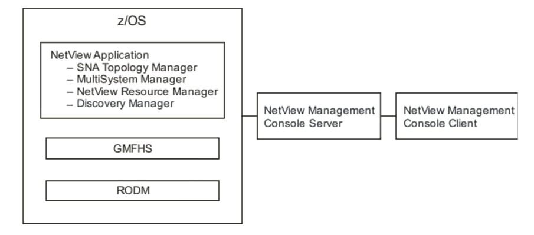
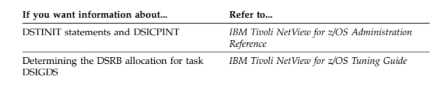
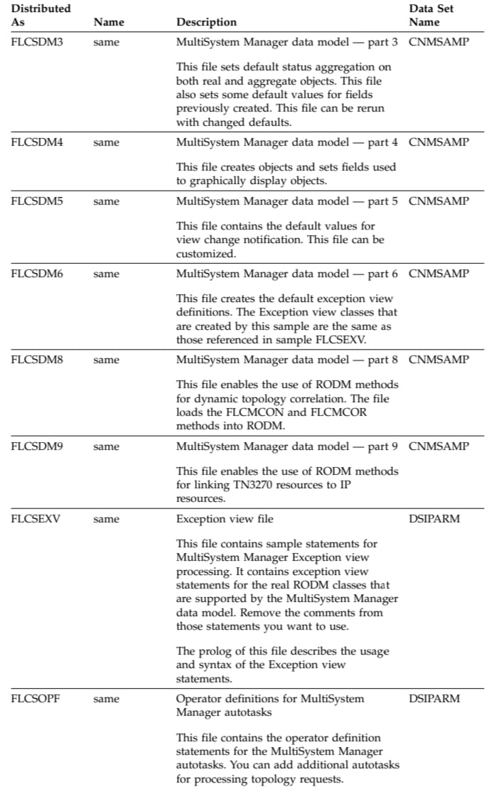
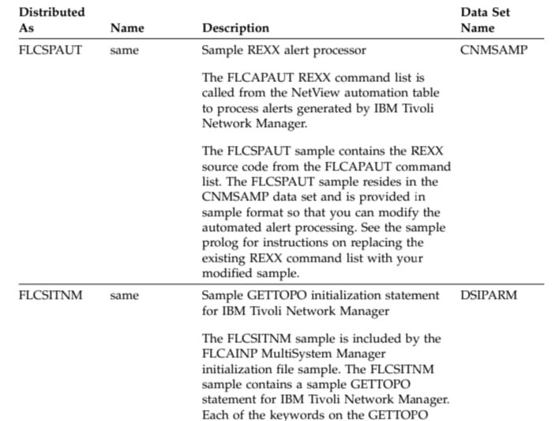
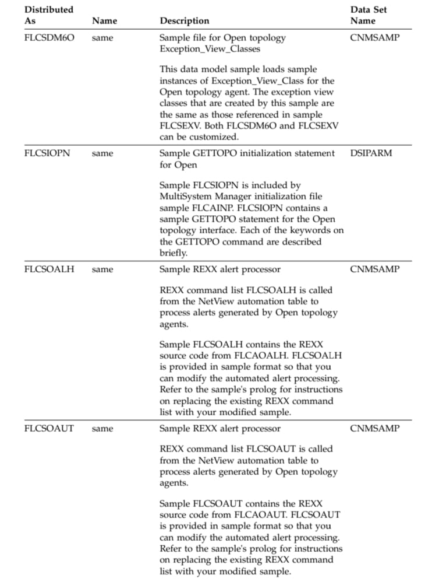

Chapter 1. Introduction
After you install and set up NetView graphics, you can monitor your system and
network resources with a dynamic, color-coded graphical display. NetView
graphical displays are based on the Resource Object Data Manager (RODM), which
is an object-oriented data cache. Objects in RODM represent resources in your
network. The data cache is located in the memory of the host processor. Many
applications can interact with a single RODM, and more than one RODM can run
on a host processor.
The Graphic Monitor Facility host subsystem (GMFHS) is the host program that
works with RODM and the NetView management console to manage resources.
The NetView management console graphically displays the resources that represent
a network, a portion of the network, or a group of networks at various levels of
detail. GMFHS supports resources that can send status updates to the NetView
program in a standard format. GMFHS works with the NetView SNA topology
manager component and the NetView management console to manage SNA
resources. GMFHS works with the MultiSystem Manager component and the
NetView management console to manage non-SNA resources. GMFHS works with
the NetView Resource Manager component and the NetView management console
to manage NetView tasks. GMFHS works with the discovery manager and the
NetView management console to view and manage sysplex TCP/IP stack
information.
Figure 1 shows the relationships of the graphical components.

Figure 1. Graphical Components
This document describes the steps required to install and enable the NetView
graphical functions. Also included are workstation-based components that support
graphical or other access.
| If you want information about... |
Refer to... |
| Installing RODM and GMFHS |
Chapter 3, “Preparing and Activating RODMand GMFHS,” on page 11 |
Managing SNA Resources with the SNA Topology Manager
The SNA topology manager functions for managing SNA and Advanced
Peer-to-Peer Networking (APPN) network environments include collection of
subarea and APPN network, local, and LU status and topology. These functions
provide:
Collection and storage of topology data, including real-time updates, in the
RODM data cache
Dynamic graphical display of topology and status
VTAM includes an agent that gathers topology information about APPN network
nodes, APPN end nodes, and the subarea network. The SNA topology manager
uses CMIP services to communicate with the VTAM topology agent when
collecting this topology information. Communication between the manager and
agent applications is over LU 6.2 sessions that are using:
OSI common management information protocols (CMIP)
SNA multiple-domain support (MDS)
The manager applications can retrieve information from multiple agent
applications. In addition, the agent applications can forward data to multiple
managers (for example, if there is another NetView system in the network with the
SNA topology manager installed).
| If you want information about... |
Refer to... |
| Installing SNA topology manager |
Chapter 6, “Preparing and Activating the
SNA Topology Manager,” on page 47
|
| Installing SNA topology manager agents |
Chapter 5, “Installing and Configuring SNA
Topology Manager Agents,” on page 45
|
Managing Non-SNA Resources with MultiSystem Manager
MultiSystem Manager is a NetView application that provides dynamic topology
and status data in RODM for management of non-SNA domains. Agents are
supported for the following network environments:
- Internet protocol (IP) networks managed by IBM Tivoli Network Manager
- Other types of networks that use Open topology agents
MultiSystem Manager topology manager uses the GETTOPO command to request
topology information and resource status from its agents. This topology and status
information is stored in RODM. As topology and status changes occur, these agents
notify the MultiSystem Manager topology manager, which updates RODM.
MultiSystem Manager simplifies the task of network management by using the
power of the NetView for z/OS program to centrally manage your network
resources.
Use the MultiSystem Manager features to manage the following types of networks:
- IP networks managed by IBM Tivoli Network Manager
- Any network supported by MultiSystem Manager Open topology agents
MultiSystem Manager provides an integrated and centralized network
management facility so that you can manage your networks from a NetView
management console workstation. MultiSystem Manager provides the following
benefits:
- Dynamic topology and status discovery of your networks
- Instant access to graphical views of the topology and status of your networks,
all from a single NetView management console workstation
- Quick notification of changes in network topology and status:
– A node is down
– A node joined the network
– A monitored adapter is not responding
– A bridge is off line
- The ability to send commands to network resources simply by selecting the
resource in a NetView management console view and then selecting the
command from a pull-down menu
- The ability to integrate the management of various types of networks
- The ability provided with the Open feature for you or a vendor to create a
topology agent that manages and monitors your resources
| If you want information about... |
Refer to... |
| Installing MultiSystem Manager |
“Initialization Files” on page 60
|
| Installing MultiSystem Manager agents |
Chapter 7, “Installing and Configuring
MultiSystem Manager Agents,” on page 51
|
Managing NetView Resources with the NetView Resource Manager
You can use the NetView Resource Manager to manage all NetView hosts in an
enterprise from the NetView management console. NetView hosts are monitored at
the task level using the resource utilization function of the NetView product.
NetView Resource Manager consists of NetView hosts that are either managers or
agents. Those that are managers require RODM and the NetView management
console to use the full function of NetView Resource Manager. NetView hosts that
are agents forward their local host information to a manager or managers.
The following information applies to NetView Resource Manager:
- v Both managers and agents can forward their local host information to one or
more managers.
- The ability to forward local host information is an agent function.
- You can use SNA or TCP/IP as your communication vehicle between managers and agents.
Managing Sysplex Resources with the NetView Discovery Manager
The discovery manager provides a comprehensive set of monitoring tools for your
sysplex, and a view of your physical configuration. The discovery manager
provides information that you can use to manage and monitor your sysplex fromthe master NetView program. Additionally, information that is discovered by the
discovery manager can be viewed at the enterprise master NetView program.
The following kinds of resources can be monitored by the discovery manager:
- Central processor complex (CPC)
- Channel subsystem identifier
- Logical partition (LPAR)
- Sysplex
- Coupling facility
- z/OS image
- TCP/IP stack
- TCP/IP subplex
- IP interfaces
- Open Systems Adapter (OSA) channels and ports
- HiperSockets™ adapter
Note: Resource Object Data Manager (RODM) is required to display OSA and
HiperSockets information in any NetView user interface.
Discovery manager resources can be viewed in the NetView management console.
If you are using the NetView management console to view sysplex TCP/IP stack
information, RODM is required.
For more information about managing and viewing sysplex resources that are
discovered by the discovery manager, see IBM Tivoli NetView for z/OS IP
Management
Planning the Installation Process
The following set of tasks is an overview of the installation process. This overview
lists steps that are required and those that are optional, depending upon the types
of resources to be managed graphically
1. Required: Prepare RODM, which includes:
- Updating the CNMSTYLE member
- Preparing MVS for RODM
- Allocating the RODM data sets
- Preparing the security system for RODM
- Updating the RODM procedure
- Customizing RODM startup values in EKGCUST
- Customizing the automated operations RODM task
- Updating the RODM load utility job to include the GMFHS data model
- Updating the RODM load utility job to include the MultiSystem Manager data model
- Updating the RODM load utility job to include the SNA topology managerdata model
2. Required: Prepare GMFHS, which includes:
- Updating the CNMSTYLE member
- Updating the GMFHS start procedure
- Customizing GMFHS startup values in DUIGINIT
- Defining GMFHS-related tasks
3. Required: Prepare the NetView management console, which includes:
- Updating the CNMSTYLE member
- Establishing a SNA LU 6.2 or TCP/IP session for the NETCONV command
- Installing the NetView management console topology server
- Installing NetView management console topology consoles
4.Optional:Prepare for managing non-SNA resources (for example IP resources), which includes:
- Updating the CNMSTYLE member
- Installing the appropriate MultiSystem Manager topology agents
- Preparing the security system for the MultiSystem Manager
- Preparing REXX for MultiSystem Manager
- Preparing the MultiSystem Manager initialization file statements
5. Optional: Prepare for managing SNA resources, which includes:
- Updating the CNMSTYLE member
- Preparing VTAM for the SNA topology manager
- Preparing the security system for the SNA topology manager
- Preparing the SNA topology manager initialization file FLBSYSD
6.
Optional: Prepare for managing NetView resources, which includes:
- Updating the CNMSTYLE member
- Defining AUTONRM to DSIOPF
- reparing the security system for the NetView Resource Manager
7.
Optional: Prepare for managing discovery manager resources, which includes:
Updating the CNMSTYLE member
Chapter 2. Enabling Graphics Support
The NetView base definitions that enable the graphics functions are contained in
the CNMSTYLE member. Make all changes to CNMSTYLE definitions in the
CNMSTUSR or CxxSTGEN member. For information about changing CNMSTYLE
statements, see IBM Tivoli NetView for z/OS Installation: Getting Started.
CNMSTYLE statements are read during NetView initialization. Some changes to
CNMSTYLE statements require a restart of the NetView program before they take
effect. For this reason, make all CNMSTYLE updates at the same time for the
graphics functions that you plan to use as part of this installation. The following
sections provide details on the CNMSTYLE definitions for the various graphics
functions.
Note: The member name for the CNMSTYLE member is controlled by the value of
NV2I in the NetView start procedure.
The graphics components are activated with TOWER statements in the
CNMSTYLE member. Copy the TOWER statement to the CNMSTUSR or
CxxSTGEN member and uncomment the components that you will be using:
| TOWER |
Description |
| MSM |
Enables the MultiSystem Manager |
| Graphics |
Enables graphics |
When the TOWER is enabled, various associated functions are also enabled during
initialization. The NetView program must be recycled for the TOWER statements
to take effect. For the MultiSystem Manager and the SNA topology manager, you
must also enable the subtowers.
| If you want information about... |
Refer to... |
| CNMSTYLE statements |
IBM Tivoli NetView for z/OS Administration
Reference and IBM Tivoli NetView for z/OS Installation: Getting Started |
| MultiSystem Manager> |
“Enabling MultiSystem Manager” on page 9 |
| SNA topology manager |
“Enabling SNA Topology Manager” on page8 |
Enabling RODM
Many NetView processes require the Resource Object Data Manager (RODM) name
to be specified. The RODMname statement in the CNMSTYLE member sets the
CNMSTYLE.RODMNAME common global variable.
You can set the RODM name using the system symbolic variable &CNMRODM in
SYS1.PARMLIB. If you do not set the &CNMRODM system symbolic variable,
copy the following CNMSTYLE statement to the CNMSTUSR or CxxSTGEN
member and substitute the correct RODM name for &CNMRODM:
RODMname = &CNMRODM
For information about changing CNMSTYLE statements, see IBM Tivoli NetView for
z/OS Installation: Getting Started.
The CNMSTYLE member also contains the following global variables, which are
used by the RODM command list (CNME1098):
COMMON.EKGHNAM = RODM
COMMON.EKGHPRC = EKGXRODM
If necessary, copy these statements to the CNMSTUSR or CxxSTGEN member, and
update the variables as needed:
EKGHPRC
HPRC
Change the EKGHPRC global variable to the name of your RODM
procedure (if it is not the same as the default value supplied with the
NetView product).
EKGHNAM
If you started the RODM procedure using an identifier, change the
EKGHNAM global variable to this identifier (if it is not the same as the
default value supplied with the NetView product). If you are not using an
identifier, the EKGHNAM global variable is not required.
Enabling GMFHS
The CNMSTYLE member contains the following global variables, which are used
by the Graphic Monitor Facility host subsystem (GMFHS) command list
(CNME2101):
COMMON.DUIFHNAM = GMFHS
COMMON.DUIFHPRC = CNMGMFHS
If necessary, copy these statements to the CNMSTUSR or CxxSTGEN member, and
update the variables as needed:
DUIFHPRC
Specify your system PROC name for starting GMFHS. DUIFHPRC must be
defined to the same name as the GMFHS procedure.
DUIFHNAM
Specify the identifier you use when starting GMFHS. If you do not use an
identifier when starting the GMFHS procedure, do not specify the global
variable DUIFHNAM.
For information about changing CNMSTYLE statements, see IBM Tivoli NetView for
z/OS Installation: Getting Started.
Enabling SNA Topology Manager
Topology Manager
When the TOWER statement is enabled for Graphics, the SNA topology manager is
automatically enabled and instructions are issued to start communication with the
local VTAM agent.
SNATM is a subtower to the Graphics tower. If you are not using the SNA
topology manager, type an asterisk (*) before SNATM to disable this function:
TOWER.Graphics = *SNATM
Enabling MultiSystem Manager
To enable the MultiSystem Manager agents, copy the following CNMSTYLE
statement to the CNMSTUSR or CxxSTGEN member:
TOWER.MSM = ITNM OPN
Agent names preceded by an asterisk (*) are disabled. Remove or add asterisks as
necessary to enable the agents that you will use:
ITNM IBM Tivoli Network Manager agent
OPN Open agent
For information about changing CNMSTYLE statements, see IBM Tivoli NetView for
z/OS Installation: Getting Started.
Note: When the TOWER.MSM statement is enabled, the %INCLUDE statement for
FLCSOPF (used for operator profiles) is also enabled.
Enabling NetView Resource Manager
To enable NetView Resource Manager, perform the following steps:
1. Copy the following CNMSTYLE statement to the CNMSTUSR or CxxSTGEN
member:
INIT.NRM = No
2. Change No to Yes.
This starts NetView Resource Manager at NetView initialization.
If you do not change CNMSTYLE statements, NetView Resource Manager
defaults to type MGR (manager). No host destinations are defaulted.
3. If you want the NetView Resource Manager type to be an agent, copy the
following CNMSTYLE statements to the CNMSTUSR or CxxSTGEN member, and modify as needed for your system:
- NRM.TYPE
Change this statement to NRM.TYPE = Agent.
- NRM.HOSTDEST.x
Code as many NRM.HOSTDEST.x statements as are applicable.
Code CMODE and PORT statements as necessary (based on your
HOSTDEST statements).
For information about changing CNMSTYLE statements, see IBM Tivoli NetView for
z/OS Installation: Getting Started.
Enabling the Discovery Manager
The discovery manager is enabled by default with the DISCOVERY tower in the
CNMSTYLE member. To enable the discovery of Telnet servers and ports, IP
interfaces, Open Systems Adapter (OSA), and HiperSockets adapters, add the
following statements to the CNMSTUSR or CxxSTGEN member with your
modifications. For information about changing CNMSTYLE statements, see IBMTivoli NetView for z/OS Installation: Getting Started.
- v TOWER.DISCOVERY
- TOWER.DISCOVERY,INTERFACES
For more information, see IBM Tivoli NetView for z/OS Installation: Configuring
Additional Components.
Chapter 3. Preparing and Activating RODM and GMFHS
NetView graphics are based on Resource Object Data Manager (RODM) and
Graphic Monitor Facility host subsystem (GMFHS). Before you can define graphics,
you must install and define parameters for RODM and GMFHS.
RODM and GMFHS require the Language Environment®
for z/OS run time library. See the Program Directory for IBM Tivoli NetView for z/OS for more information.
Preparing RODM
Use the steps in this section to prepare RODM.
Defining RODM as an MVS Subsystem
Before RODM can be used, it must be defined as an MVS subsystem in
SYS1.PARMLIB member IEFSSNxx. For more information, see IBM Tivoli NetView
for z/OS Installation: Getting Started.
Allocating VSAM Clusters for RODM
Job CNMSJ004 defines the VSAM clusters for RODM. Table 1 lists the data set
names that are associated with RODM, as well as the names of members
containing VSAM cluster information for these data sets. Any sample members
needed to run CNMSJ004 are located in the NETVIEW.V621USER.INSTALL data
set that was created when you ran job CNMSJBUP.
Note: CNMSJ004 is a sample job that is run during basic NetView installation and
might already have been used to create the RODM VSAM clusters.
Before allocating VSAM clusters:
1. Review EKGSI101 and CNMSID01.
EKGSI101 provides the name, volume, catalog, and password specifications for
the VSAM clusters that are allocated. CNMSID01 specifies the name of the
VSAM clusters that are to be deleted.
Ensure that the values specified in these input members are correct for your
system.
Table 1. VSAM Clusters for the V6R2M1 Facilities
The EKGSI101 sample specifies VSAM SHAREOPTIONS(2) for performance
reasons. However, with SHAREOPTIONS(2), the RODM logging function
makes no provision for secondary allocations. The results of RODM logging
with SHAREOPTIONS(2) using secondary allocations are unpredictable.
Note: Use the MVS MODIFY command to specify RODM logging options.
2. Make sure that the VSAM cluster names match the names in your RODM
startup procedure, EKGXRODM.
3. With the checkpoint facility, you can save a copy of the data cache to DASD.
The data can then be read from DASD at RODM restart (warm start). Programs
cannot access RODM data during checkpointing.
The following VSAM clusters are used by the RODM checkpoint facility:
- NETVIEW.CNM01.EKGMAST is the RODM master window checkpoint data
set.
This data set contains system information for RODM.
- NETVIEW.CNM01.EKGTRAN is the RODM translation window checkpoint
data set.
This data set contains the translation address information that allows for
correct data mapping and addressing in the RODM data cache.
- NETVIEW.CNM01.EKGCK001 and NETVIEW.CNM01.EKGCK002 are RODMdata window checkpoint data sets.
These data sets contain the actual data in the RODM data cache.
You can create additional data window checkpoint data sets. Define a new
checkpoint data set to RODM by adding a DD card to the RODM start
procedure using a file name format of EKGCKxxx, where xxx is the next
available 3-digit decimal number in the increasing sequence.
The size of the RODM checkpointing facility VSAM clusters that were defined
to the RODM startup procedure, EKGXRODM, determines the number of
objects and classes that you can add to RODM. See IBM Tivoli NetView for z/OS
Tuning Guide for information about estimating the size of these data sets.
If you do not use the checkpoint facility, update the RODM procedure to
remove the DD statements for the checkpoint data sets and code the following
statement in EKGCUST:
CHECKPOINT_FUNCTION ( NONE )
During initialization RODM looks for the checkpoint data sets. When it does
not find them, you see one or more of the following messages:
EKG1123I EKGXRODM : THE CHECKPOINT FUNCTION IS NOW DISABLED
To allocate VSAM clusters:
1. The default volume specified in EKGSI101 is VOL(CPDLB2). If your volume is
not CPDLB2, change CPDLB2 in these members to a valid volume.
Note: If you are deleting any of your existing VSAM clusters, review
CNMSID01 to make sure you delete the correct VSAM cluster names.
2. Run CNMSJ004.
3. Verify your return codes before continuing with the next step.
Note: If you need to allocate VSAM clusters for a second instance of RODM,
you can run job EKGSLOG to allocate the RODM log data sets as defined in
EKGSI201 and job EKGSCKPT to allocate the RODM checkpoint data sets as
defined in EKGSI202.
| If you want information about... |
Refer to...
|
| RODM logging options |
IBM Tivoli NetView for z/OS Troubleshooting
Guide |
Using the RODM Log Formatter
The RODM log formatter (EKGRLOG) provides formatted output of the contents
of the RODM log.
| If you want information about... |
Refer to...
|
| RODM log formatter |
IBM Tivoli NetView for z/OS Troubleshooting
Guide |
Using the RODM Dump Utility
The RODM dump utility is a service program that makes it possible to print data
residing in the RODM data cache. The dump utility provides multiple formats for
printing this information.
You can generate five types of reports to print the contents and structure of the
RODM classes and objects. These reports include:
- Class listing
- Class index
- Object listing
- Object index
- Statistical report
| If you want information about... |
Refer to...
|
| The output for each of the RODM dump
utility reports
|
IBM Tivoli NetView for z/OS Troubleshooting
Guide |
Bypassing or Defining Security
The commands you issue to define RODM and the operators to the security class
can vary, depending on whether you use RACF® or another SAF product.
If you are using an SAF product, such as RACF, on your system, you can use one
of the following methods to define RODM security:
- Bypass system security with *TSTRODM.
- Define the RODM task and authority level to the RODMMGR class of your SAF
product, if it is available.
- Define the RODM task and resources that represent authority levels to a
user-defined class in your SAF product.
| If you want information about... |
Refer to...
|
| RODM security
|
IBM Tivoli NetView for z/OS Security Reference |
Bypassing RODM Security
To bypass RODM security, initialize RODM with *TSTRODM in the SEC_CLASS field in
EKGCUST when:
- Your system uses an SAF product, such as RACF, but you do not want to define
RODM and operator tasks to the SAF product for security.
- Your system does not use an SAF product.
- The SAF product is not active on your system.
Note: You can now recycle the target system with the create link pack area (CLPA)
option.
Defining RODM Security to the RODMMGR Class
If you are using an SAF product which provides a RODMMGR class, define
security resource names to that product and authorize users to the correct SAF
resources.
Defining RODM Security to a User-Defined Class
If you are using an SAF product for RODM security and if the SAF product does
not provide the SAF RODMMGR class, these steps must be completed before
RODM can initialize:
- Define a security class in the SAF product for RODM.
For RACF, create a RACF router table for this security class, as described in the
IBM Tivoli NetView for z/OS Security Reference.
- Define security resource names for the class you define. For more information,
see the IBM Tivoli NetView for z/OS Administration Reference.
Defining the Resource Class to the RACF Class Descriptor Table
If you defined RODM security, use the SEC_CLASS operand in EKGCUST in
CNMSAMP to specify the security class definition for your installed security
system.
If you do not define the class name in the EKGCUST customization file, or if you
do not include the EKGCUST DD statement in the JCL, the default security name
is RODMMGR.
To use another class name as the default RACF security name, define the
class_name to the RACF class descriptor table and the RACF router table. Locate
the RFTABLE in the RACINSTL member in SYS1.SAMPLIB. RACINSTL contains
sample RACF installation jobs.
| If you want information about... |
Refer to...
|
| RFTABLE job
|
IBM Tivoli NetView for z/OS Security Reference |
Using RACF for RODM Security
If you use “Defining RODM Security to the RODMMGR Class” or “Defining
RODM Security to a User-Defined Class,” you must also perform the following
operations:
- Define six RACF resource names under RODMMGR or your user-defined
security class for the six user authority levels.
- Define user IDs for users who are connecting to RODM.
- Authorize user IDs to the appropriate RACF resource names.
Note: RODM only verifies security levels for API calls into RODM, and not on the
MODIFY command interface. To implement security for the MODIFY command
interface, refer to the SecureWay Security Server for z/OS library.
Defining RACF Resource Names: To define the RACF resource names under
RODMMGR for the six user authority levels, complete the following steps from
your RACF-authorized TSO ID.
1. To define the RODM resource names, if SEC_RNAME is RODM, enter:
RDEFINE RODMMGR RODM1 UACC(NONE)
RDEFINE RODMMGR RODM2 UACC(NONE)
RDEFINE RODMMGR RODM3 UACC(NONE)
RDEFINE RODMMGR RODM4 UACC(NONE)
RDEFINE RODMMGR RODM5 UACC(NONE)
RDEFINE RODMMGR RODM6 UACC(NONE)
If you have your own user-defined class_name, replace RODMMGR with the
security class name on the RDEFINE commands. The resource names used are
an example.
The RODM resource names consists of a prefix and a suffix. The suffix must
have values of 1 through 6 for the different levels of security. The default
resource name prefix is the RODM name specified in the RODM startup JCL.
For example, the RODM name is ZZRODM using either of the following start
commands:
S EKGXRODM,NAME=ZZRODM
S EKGXRODM.ZZRODM
Your resources must use the name of your RODM.
If you specify your own RODM resource names, the resource name prefix must
be specified in EKGCUST on the SEC_RNAME statement if the resource name
prefix is not the name of your RODM.
RODM restricts the length of resource names by requiring that the resource
name be one less than the number you specify for MAXLNTH. For RODMMGR,
MAXLNTH is 44, so the resource name must contain 43 characters or less. If you
define your own security class, MAXLNTH is specified when you define the RACF
class descriptor table. See “Defining the Resource Class to the RACF Class
Descriptor Table” on page 14 for information about defining a security class.
2. To set the system-wide RACF options, enter:
SETROPTS CLASSACT(RODMMGR)
If you have your own user-defined class_name, replace RODMMGR with the
security class name on the SETROPTS command. The resource class name used
is an example.
Defining User IDs for Users Who Are Connecting to RODM: Typically, user IDs
are already defined. If the user ID is already defined to RACF (for example, for
normal logon), no additional registration is required. To define a user ID, locate the
RFTABLE job in the RACINSTL member in SYS1.SAMPLIB. RACINSTL contains
sample RACF installation jobs.
| If you want information about... |
Refer to...
|
| RFTABLE job
|
IBM Tivoli NetView for z/OS Security Reference |
Authorizing User IDs to RACF Resource Names: To access RODM, enter the
following command from your authorized TSO ID for each userid that requires
access:
PERMIT resourcename CLASS(RODMMGR) ID(userid)
Where:
resourcename
Specifies the name of the RODM resource (such as RODM1 through
RODM6) that has the appropriate security level for the function that the
userid needs to be able to perform. Indicate the highest level RODM
resource name the userid needs to access. If you indicate a user is
authorized for RODM3, that user also has authorization for security level 1
(RODM1) and security level 2 (RODM2) capabilities.
For example:
PERMIT RODM3 CLASS(RODMMGR) ID(USER1)
Indicates that USER1 is authorized to perform the capabilities of RODM
security levels 1, 2, and 3. Table 2 describes the RODM security levels.
userid
Specifies the RACF user ID. You can list individual user IDs. You can also
use the PERMIT command to authorize a group to the authority level
resources, which can be used to connect or remove user IDs from the
group as their need for RODM capabilities changes.
There are three special user IDs for AON, MultiSystem Manager, and the
NetView Resource Manager. These user IDs consist of the domain ID
concatenated with the characters AON, MSM, and NRM respectively.
Note: If you have a user-defined class_name, replace RODMMGR with the security
class name on the PERMIT commands.
Table 2 shows how each level of access security includes those preceding it.
Table 2. RODM Access Security Levels
NetView operators require RODM security level 2 or higher to use the QRS
command to query whether they have span of control over resources. Authorize
the following items:
- RODM load function
The RODM load function requires a minimum of RODM security level 3. If your
RODM loader job is run as a started procedure, you can define it to the
STARTED class in the SAF product to enable it to run as a trusted user. You can
define the task in the started procedure table, ICHRIN03; however, using the
STARTED class is preferred.
- v GMFHS procedure
The GMFHS procedure requires a minimum of RODM security level 5.
- NetView procedure (if NetView user code accesses RODM)
- SNA topology manager
The SNA topology manager requires a minimum of RODM security level 5. The
user ID to authorize is APPNTM.
- DSIQTSK task
The DSIQTSK task requires RODM security level 6. Define user ID DSIQTSK or
the value of the ID keyword of the REP statement in the DSIQTSKI initialization
member.
- Any user who submits or starts one of the following items:
– RODM load function
– NetView procedure (if NetView user code accesses RODM)
– SNA topology manager
– DSIQTSK task
- Any user who manipulates RODM from the NetView program by using either
RODMVIEW panels or the RODMVIEW command processors.
A minimum of RODM security level 2 for the NetView domain name, if span of
control is being applied to NetView management console views and resources.
Connecting to RODM
When connecting to RODM, a user ID and password or password phrase are part
of the API request. A password or password phrase is required, except when the
program making the request is running in an APF-authorized library. The user IDcan be specified on the connection request, or RODM can extract it from the SAF
product.
You can connect to RODM with a blank user ID if the system on which RODM is
installed has active RODM security. In this case, RODM extracts the user ID fromthe SAF product. Connecting to RODM is not allowed if you bypassed RODMsecurity.
If you have RODM security active, the user ID that is associated with the
connection request must be defined to your SAF security product.
For started procedures, you can define the started procedure name to the
STARTED class of the SAF product. In RACF, this can also be accomplished by
defining the task in the started procedure table, ICHRIN03; however, using the
STARTED class is preferred.
Updating the RODM Start Procedure
The NetView program supplies a sample RODM start procedure EKGXRODM in
CNMSAMP. You can modify the RODM start procedure to match your
environment. Consider the following items:
- TYPE of startup (C for cold, W for warm, or COLDFORC for cold force)
- NAME assigned to this RODM (default is the RODM procedure name)
This name can be specified as a system symbolic.
- INIT to specify a method to run during RODM initialization (default is no
initialization method)
- CUST to specify the customization member containing startup parameters
EKGCUST is supplied as a sample.
- Correct data set names for STEPLIB, EKGLOGP, EKGLOGS, and EKGCUST data
sets, as well as the checkpoint data sets if checkpointing is to be used
- Modification of the exit to accommodate the region size needed for RODM
If you have the IEFUSI exit on your system, modify the exit to accommodate the
region size needed for RODM. The IEFUSI exit can be used to limit:
– The region size and region limit
– The size of data spaces and hiperspaces for jobs started on an MVS system
Because RODM allocates a 2-gigabyte data space at initialization, modify your
IEFUSI exit to enable RODM to start. Note that IEFUSI is passed the address of
the program name on input.
Defining RODM Using the EKGCUST Member
With the EKGCUST member, you can define values and tailor RODM to your
installation's needs. If you choose not to customize your RODM, the default values
apply.
RODM looks for an optional EKGCUST DD statement in the job stream. EKGCUST
names the input customization member. If you defined a customization member, RODM reads it in. If not, RODM provides defaults.
You can use symbols to represent operands, values, and comments in EKGCUST if
symbolic substitution is enabled on your system. Ensure that the symbols are
defined in the IEASYMxx member of SYS1.PARMLIB. See “RODM Customization
Member Guidelines” on page 19 for more information.
Note: You can specify each operand once.
After initialization is complete, you are prompted for instructions to continue with
the default values or to stop the process of bringing up the RODM.
RODM Customization Member Format and Defaults
Figure 2 is an example of the format and defaults for the RODM operands that you
can specify in the customization member. Except for the CELL_POOLS statement,
the values in EKGCUST are the default values that are assumed if a statement is
not present in the member or if the EKGCUST member is not available.
Figure 2. Example of the EKGCUST Customization Input Member Syntax
RODM Customization Member Guidelines
You can code multiple operands in a single record (or line), separated by at least
one blank, or you can code them individually in separate records. Blanks between
the operands and the left parenthesis as well as blanks within the parentheses are
ignored. For example,
CELL_POOLS (8,12,16,20)
reads the same as
CELL_POOLS ( 8, 12, 16, 20 )
You can specify operands in any order, and all operands are optional. You can use
symbols to represent operands and values in EKGCUST if symbolic substitution is
enabled on your system. Ensure that the symbols are defined in member
IEASYMxx of SYS1.PARMLIB.
Besides the operands specified above, you can code comments in the customization
member. The beginning and closing comment delimiters, /* and */, need not
appear in the same record or line. Comments are ignored by RODM and can
appear any place a blank space is allowed.
You can also use symbols to represent comments if symbolic substitution is
enabled on your system. Ensure that the symbols are defined in member
IEASYMxx of SYS1.PARMLIB. Code a symbol for the beginning comment delimiter
and a symbol for the closing comment delimiter.
Note: Note that the symbols for the beginning and closing comment delimiters
must be coded on the same line in EKGCUST.
If you do not supply customization values, RODM provides the defaults for all
operands. Consider these default values as guides.
| If you want information about... |
Refer to... |
|---|
| Customizing the RODM EKGCUST operands |
IBM Tivoli NetView for z/OS Administration
Reference |
RODM Customization Member Performance Considerations
Performance considerations differ depending upon your system environment and
the other applications you have installed. You can make performance
enhancements by modifying the following parameters in EKGCUST:
1. Set the following parameters to reduce the time spent acquiring and freeing
storage:
- PLI_ISA to 40K
- PRIMARY_HEAP_SIZE to 64K
- EXTEND_HEAP_SIZE to 32K
2. Set the CONCURRENT_USERS parameter to the maximum number of RODMuser tasks you might have at the same time.
If the number is too small, you cannot start all the RODM user applications
you need. If the number is too large, you will have unused storage. Start with a
value of 20 and increase or decrease as required.
3. Set the ASYNC_TASKS parameter to the number of concurrently running
asynchronous tasks. This parameter controls the multiprogramming level of
RODM and controls the asynchronous method API tasks.
The default value of 5 asynchronous tasks is sufficient for most environments.
| If you want information about... |
Refer to... |
|---|
| Customizing the RODM EKGCUST operands |
IBM Tivoli NetView for z/OS Tuning Guide |
Defining Initialization Values for RODM DSIQTSK Task
DSIQTSKI contains the RODM initialization values for the DSIQTSK task.
The DSIQTSK task allocates storage, reads the DSIQTSKI initialization file, and
carries out RODM connections, disconnections, and checkpoint requests. This task
is defined to the NetView program in the CNMSTYLE member.
To automatically start the DSIQTSK task during NetView initialization, copy the
following CNMSTYLE statement to CNMSTUSR or CxxSTGEN, and change
INIT=N to INIT=Y:
TASK.DSIQTSK.INIT=Y
For information about changing CNMSTYLE statements, see IBM Tivoli NetView for
z/OS Installation: Getting Started.
For each RODM you specify in DSIQTSKI you can define an initialization
command processor to be invoked when the DSIQTSK task successfully connects
to RODM. Specify the name of this command processor in each RODM definition
statement.
The following example shows the DSIQTSKI initialization file:

Notice that you can specify the RODM name with a system symbolic
(&CNMRODM).
You can define up to 64 RODMs and 64 NetView tasks in DSIQTSKI to be used for
command routing.
The repository definition statements (REP) specify the object repository name, as
well as: v Whether DSIQT
- Whether DSIQTSK connects to the repository during initialization (CONN)
- Whether the repository is the current run time RODM (AO)
- The number of seconds that DSIQTSK waits to access the repository while it is
being checkpointed (T)
Preparing GMFHS
Use the steps in this section to define GMFHS.
Updating the GMFHS Start Procedure
The NetView program supplies a sample GMFHS start procedure CNMGMFHS
(distributed as CNMSJH10) in CNMSAMP. You can modify the GMFHS start
procedure to match your environment.
To update the CNMGMFHS procedure for starting GMFHS, perform the following
steps:
1. Change the domain name to match your NetView domain or invoke
CNMGMFHS with DOMAIN=domain_name.
2. For an aggregation warm start, code the AGGRST=YES parameter.
An object-independent method (DUIFFAWS) is invoked to start methods
associated with the fields related to status aggregation in the real and aggregate
objects in the RODM data cache.
The default is that DUIFFAWS is not invoked and GMFHS starts normally.
3. For a resource status warm start, code the RESWS=YES parameter.
This causes GMFHS to bypass the normal clearing and soliciting of the initial
status for all domain resources and, instead, to use the existing status within
RODM.
The default is that a resource status warm start is not invoked and GMFHS
starts normally.
4. Set the ARM parameter.
The ARM parameter controls GMFHS registration with the MVS Automatic
Restart Manager (ARM).
*ARM
Register with ARM using the default name, which is NETVIEW@@
concatenated with the domain ID.
name
Register with ARM using a user-specified name. A valid name has the
following characteristics:
- Consists of 1–16 characters.
- The first character cannot be numeric.
- The remaining characters can be alphanumeric, or the following special
characters: @, #, or $.
- Alphabetic characters must be in uppercase.
*NOARM
Do not register with ARM. This is the default.
You can also use the MVS Automatic Restart Manager to group applications
together by element type. The GMFHS element type is SYSNETV4. The element
type cannot be changed.
5. The SUBSYM parameter enables symbolic substitution for the data set members
that are read by GMFHS: DUIGINIT and DUIGPWLU.
*SUBSYM
Enable symbolic substitution. This is the default.
*NOSUBSYM
Disable symbolic substitution.
| If you want information about... |
Refer to... |
|---|
| Aggregation and resource status warm starts
(AGGRST=YES and RESWS=YES) |
IBM Tivoli NetView for z/OS Resource Object
Data Manager and GMFHS Programmer's Guide |
Defining Initialization Values for the GMFHS Main Task
Use the GMFHS main task to perform the following tasks:
- Start the GMFHS host environment.
- Start and control the GMFHS host subcomponents.
- Provide an interface to the MVS operator.
- Provide reinitialization services on completion of a CONFIG NETWORK command.
- End the GMFHS host session.
The GMFHS main task initialization keywords are contained in DSIPARM member
DUIGINIT. Ensure that your RODM name and user ID are correct. DUIGINIT
contains the system symbolic &CNMRODM that can be used to set the RODM name.
See sample DUIGINIT for parameters that can be changed for your environment.
The NetView management console topology servers that are restricted from
accessing GMFHS are listed in DSIPARM member DUIGPWLU. If no names are
specified, all NetView management console topology servers can access GMFHS.
| If you want information about... |
Refer to... |
|---|
| The GMFHS host main task initialization
keywords |
IBM Tivoli NetView for z/OS Administration
Reference |
Defining the COS Gateway Autotask
The common operations services (COS) gateway autotask uses the DUIFCSGW
command processor to receive commands for service points from the GMFHS
scope checker OPT. The command processor routes these commands to the
appropriate COS gateway service point autotask. The command processor also
receives the command responses from the service point autotasks, correlates these
to the appropriate commands, and returns the correlated commands to the
network command manager in the GMFHS host.
The COS gateway autotask supports the GMFHS command support. COS gateway
uses the RUNCMD command to run commands on a service point.
If you specified TOWER=Graphics in the CNMSTYLE member, the COS gateway
autotask (DUIFCSGW) is started at NetView initialization. Statements are coded in
the CNMSTYLE and CNMSTASK members to facilitate the starting of the task. Do
not change these statements.
The STARTCNM Graphics command also starts the COS gateway autotask.
Defining the Event Manager Autotask
The event manager autotask DUIFEAUT receives and interprets alerts for GMFHS.
The event manager posts resource status provided by alerts to the appropriate
objects in the RODM data cache.
If you specified TOWER=Graphics in the CNMSTYLE member, the event manager
autotask is started at NetView initialization. Statements are coded in the
CNMSTYLE and CNMSTASK members to facilitate the starting of the task. Do not
change these statements.
Defining the Scope Checker OPT
The GMFHS scope checker OPT (task DUIFSSCO) receives all workstation
commands from the interprocess communications (IPC) task using the
program-to-program interface (PPI).
The IPC component of GMFHS provides message routing both within the GMFHS
address space and between the GMFHS address space (and other components).
IPC does not perform application processing; but it is the originator of, and
destination for, messages related to session establishment and release.
Some of the commands received by the scope checker OPT are:
- Activate, Deactivate, and Recycle commands
- Commands with NetView command definition statements that might require
command authorization
For example:
– Resource specific commands
– Native commands
– Generic commands
The scope checker OPT carries out NetView command authorization on these
commands. Commands without proper authorization are sent with a command
authorization failure reason code to the network command manager (NETCMD) in
the GMFHS host.
The scope checker OPT receives NetView OST gateway and COS gateway
command messages from the GMFHS NETCMD.
If you specified TOWER=Graphics in the CNMSTYLE member, the scope checker
OPT is started at NetView initialization. Statements are coded in CNMSTYLE and
CNMSTASK members to facilitate the starting of the task. Do not change these
statements.
| If you want information about... |
Refer to... |
|---|
| Protecting commands using scope of
command authorization, the NetView
command authorization table, or an SAF
security product |
IBM Tivoli NetView for z/OS Security Reference |
Defining the NMCSTATUS Policy Autotask
DUIFPOLI is the autotask used to process NMCSTATUS policy definitions.
You can automatically start the NMCSTATUS policy autotask and processing of the
NMCSTATUS policy definitions at NetView initialization. To do this, verify that
you made the following updates in CNMSTUSR or CxxSTGEN member (see
Chapter 2, “Enabling Graphics Support,” on page 7):
- Graphics is uncommented on the TOWER statement.
- RODM identifier is specified on the RODMname statement.
You can change the name of the DUIFPOLI autotask to another autotask name. To
do this, copy the following CNMSTYLE statement to CNMSTUSR or CxxSTGEN:
(GRAPHICS)function.autotask.NMCpolicy = DUIFPOLI
Replace DUIFPOLI with your autotask name. The autotask name can be 1 - 8
characters long. When you do this, a common global variable
CNMSTYLE.AUTO.NMCPOLICY is created with the new autotask name. For
information about changing CNMSTYLE statements, see IBM Tivoli NetView for
z/OS Installation: Getting Started.
Note: Do not change the global variable CNMSTYLE.AUTO.NMCPOLICY in the
CNMSTASK or DSITBL01 member.
| If you want information about... |
Refer to... |
|---|
| Creating and loading a policy file containing
NMCSTATUS policy definitions |
IBM Tivoli NetView for z/OS Administration
Reference |
Starting RODM Using Job EKGXRODM
EKGXRODM has the following parameters:
TYPE
Specifies whether to cold start or warm start RODM.
W Specifies warm start. This is the default if you do not specify a type.
Note: Because of the changes to DUIFSTRC, the first time you start RODMfor the NetView program (after upgrading), specify C to perform a cold start of RODM.
C Specifies cold start.
COLDFORC
Specifies cold start without issuing message EKG1918D, which requires
operator intervention.
NAME
Specifies the rodmname of the RODM program to be started. If you do not enter
a value for rodmname, the NetView program defaults to the procedure name
that you defined. For the samples that are supplied with the NetView program,
use RODMNAME as the example RODM name.
INIT
Specifies the name of the initialization method to run. If you leave this
parameter blank, no initialization method is run. See the IBM Tivoli NetView for
z/OS Resource Object Data Manager and GMFHS Programmer's Guide for
additional information about writing initialization methods.
CLRSSB
Specifies to clear MVS storage traces left by a RODM that has ended
abnormally or has been forced off the system by the operator. Use this
parameter only after a RODM has been forced off the system in this manner, and then only after an attempt to restart RODM without the CLRSSB
parameter has been unsuccessful.
NO
Specifies not to force a restart of a RODM with the same name. This is the
default.
YES
Specifies to force a restart of a RODM with the same name.
Note: When using this parameter, specify YES only if, when you start
RODM, you receive message EKG1912 EKGXRODM: THE RODM rodmname IS
ALREADY ACTIVE, and are certain no RODM with the same name is active.
The CLRSSB keyword has no effect on the number of SSBs that are stored
in the CSA area.
CUST
Specifies the member name in EKGCUST DD PDS to be used as the
customization file.
ARM
Controls RODM registration with the MVS Automatic Restart Manager (ARM).
*ARM
Register with ARM using a RODM-generated name, which is NETVIEW#
concatenated with the RODM name.
name
Register with ARM using a user-specified name. A valid name has the
following characteristics:
- Consists of 1 - 16 characters.
- v The first character cannot be numeric.
- The remaining characters can be alphanumeric, or the following special
characters: @, #, or $.
- Alphabetic characters must be in uppercase.
*NOARM
Do not register with ARM. This is the default.
You can also use the MVS Automatic Restart Manager to group applications
together by element type. The RODM element type is SYSNETV3. The element
type cannot be changed.
SUBSYM
The SUBSYM parameter enables symbolic substitution for the RODM
customization member.
*SUBSYM
Enable symbolic substitution. This is the default.
*NOSUBSY
Disable symbolic substitution.
ROUTECDE
Specifies the route code to be used for all WTO commands issued by RODM.
The default value is 1.
Specifies the route code to be used for all WTO commands issued by RODM.
The default value is 1.
When you receive the following message:
EKG1918D EKGXRODM: RODM rodmname WILL COLD START.
ENTER ’1’ TO CONTINUE OR ’2’ TO TERMINATE.
Type 1 to continue.
You then receive the following two messages:
IEC161I 227-229,EKGXRODM,EKGXRODM,EKGD003
EKG5011I EKGXRODM : THE NUMBER OF CHECKPOINT FILES USED
BY RODM IS 2.
The last parameter in the first message (EKGD003) changes, depending on the
number of checkpoint files. It is always one more than the number of checkpoint
files that you have specified in EKGXRODM. EKGXRODM is shipped with two
checkpoint files defined.
If you are running RODM without checkpoint data sets, you receive the following
message:
EKG1123I EKGXRODM :
THE CHECKPOINT FUNCTION IS NOW DISABLED
To start a second RODM:
- Allocate VSAM clusters by running job EKGLOG to allocate the RODM log data
sets as defined in EKGDLOG and job EKGWIND to allocate the RODM
checkpoint data sets as defined in EKGDWIND.
- Specify a second rodmname. You cannot use the same rodmname (for example,
RODMNAME) for the second RODM.
- Create a second RODM start procedure and modify it to use the data set names
you allocated with EKGLOG and EKGWIND.
- Keep the checkpoint data sets of a RODM with the translation data sets
(EKGTRAN) and the master window data sets (EKGMAST) for each RODM.
After you have performed a warm start on RODM, mixing the checkpoint data
sets from one RODM with the translation and master window data sets of
another RODM can corrupt the RODM data cache.
After RODM is initialized, you receive the following message:
EKG1900I EKGXRODM: RODM rodm INITIALIZATION IS COMPLETE WITH LE/370
Note: You cannot stop RODM by ending the current NetView program. To end
RODM when started using only its PROC name, enter the following command at
the system console:
F procname,TERM
If you started RODM using an identifier, enter the following command at the
system console:
F identifier,TERM
If you are running GMFHS and need to end or recycle RODM, end the GMFHS
application before ending RODM.
Note: GMFHS is dependent on the GMFHS data model being present in RODMand it is present only when RODM is active. If you start GMFHS before RODM is
active, or if you end RODM while GMFHS is still active, GMFHS periodically
checks to see if RODM has become active. If you then start RODM, and GMFHS
reconnects to RODM before the GMFHS data model becomes active, then GMFHS
ends
Verifying the RODM Installation
Start RODM using the instructions in “Starting RODM Using Job EKGXRODM” on
page 24. To verify the RODM installation using job EKGSVER:
1. Edit the PARM statement in job EKGSVER in the
NETVIEW.V621USER.INSTALL data set to reflect the rodmname and userid for
your system.
Note: The rodmname and userid are required parameters. The password or
password phrase is not required with userid. You can specify a password or
password phrase to your TSO user ID, but the JES output log displays this
password or password phrase. If you do specify a password or password
phrase, you might want to keep this verification job in a RACF authorized data
set to prevent access to the user ID passwords or password phrases.
2. Run job EKGSVER.
3. Ensure that the return code is 0.
If you specified the same user ID in DUIGINIT, you receive a return code of 8.
Change the user ID in EKGSVER to fix this problem.
The following example shows the output that you receive after running EKGSVER:
Loading the Data Models
The CNMSJH12 sample job, which is provided with the NetView program, loads
the GMFHS data model. It also loads RODM with the SNA topology data model
class and object definitions that are required for the dynamic definition of SNA
objects, as well as the MultiSystem Manager data model class and object
definitions that are required for dynamic definition of the non-SNA objects. Each
class contains a set of fields describing the characteristics of an object. Classes also
contain presentation fields from the GMFHS data model that determine how an
object is displayed in views on the NetView management console.
Job CNMSJH12 calls JCL procedure EKGLOADP to load the RODM data cache
with a set of RODM class definitions and methods and sample object definitions.
To load the class and object definitions using job CNMSJH12:
1. Verify that RODM is active.
2. Verify that your TSO ID is authorized if you are using a security facility, such
as RACF.
3. Ensure that job CNMSJ003 has been run to copy EKGLOADP into one of your
system PROCLIB data sets, and that EGKLOADP has been modified to run on
your system.
4. Edit job CNMSJH12
In the PARM field of the EXEC statement, replace rodmname with the name
by which RODM is known to the applications to which it connects
v Ensure that the EKGIN1 DD statements include the data model members for
the components you are using:
DUIFSTRC
GMFHS data model (required)
DUIFNRMx
NetView Resource Manager sample (uncomment to run)
FLBTRDMx
SNA topology manager data model
FLCSDMx
MultiSystem Manager data model (uncomment to run)
DUIFSNET
Sample network member which can be loaded for test purposes
(uncomment to run)
For more information about the data model samples, see Appendix B,
“NetView Graphics Samples,” on page 95.
To install topology correlation, remove the comment before the load
statement for FLCSDM8 in the EKGIN1 data set concatenation.
5. Run CNMSJH12:
As a batch job, your TSO user ID or USER on the job statement must be
RACF-authorized if you are using RACF to protect RODM.
As a started procedure, you must update the RACF started procedure table,
which assigns a RACF-authorized user ID for the RODM load utility
procedure if you are using RACF.
6. Ensure that the return code is 0 before proceeding.
If you need to run this job more than once to receive a return code of 0, you need
to delete the classes that were allocated during the previous running. You can
delete these classes by stopping and then cold starting RODM.
Starting GMFHS Using Job CNMGMFHS
CNMGMFHS (CNMSJH10) is copied to PROCLIB when you load partitioned data
sets during installation. The symbolics in CNMGMFHS must match the naming
conventions for your system.
Complete the following steps before starting GMFHS:
1. Verify that RODM is active and the RODM data cache has been loaded with
data models from CNMSJH12, as explained in “Loading the Data Models” on
page 28.
2. Your host is designated as the focal point host on the CNMTAMEL statement in
CNMSTASK. The member name is set to MEM=DUIISFP.
Notes:
a. Make sure the Graphics tower is enabled on the TOWER statement in the
CNMSTYLE member.
b. If you updated the CNMTAMEL task statement before you started
CNMPROC, you can make the change by stopping and starting
CNMTAMEL. Enter the following from the NetView command facility:
STOP TASK=CNMTAMEL
START TASK=CNMTAMEL,MEM=DUIISFP
To start GMFHS, enter the following command at the system console:
S CNMGMFHS.GMFHS
You receive messages similar to the following messages:
DUI4027I GMFHS MAIN TASK INITIALIZATION IS COMPLETE FOR DOMAIN = domainid
DUI4003I GMFHS NETWORK CONFIGURATION INITIALIZED SUCCESSFULLY
The syntax for the START CNMGMFHS command follows:
START
where
DOMAIN=domain_name
Specifies the name of your NetView domain.
AGGRST=Y|N
Specifies whether to run AGG calculation. The default is no (N).
ARM=*NOARM|*ARM|name
Specifies whether to register with the Automatic Restart Manager (ARM).
The default is *NOARM.
If the value is ARM, the name generated is NETVIEW@@ concatenated
with the domain_name and the element type (SYSNETV4). This name
cannot be changed.
You can register with ARM using a user-specified name. A valid name has
the following characteristics:
Consists of 1–16 characters.
- The first character cannot be numeric.
- The remaining characters can be alphanumeric, or the following special
characters: @, #, or $.
- Alphabetic characters must be in uppercase.
RESWS=Y|N
Specifies whether to warm start the resource status. The default is no (N).
SUBSYM=*SUBSYM|*NOSUBSYM
Specifies whether to substitute system symbolics before they are displayed.
The &DOMAIN symbolic that is supplied with the NetView program is
also included in the substitution process. Substitution is always performed
on the &DOMAIN symbolic unless substitution is disabled when the
NetView program is started. For MVS and user-defined system symbolics,
substitution is not performed if substitution is disabled when the NetViewprogram is started or you do not define an MVS system symbolic on your
MVS system. *SUBSYM is the default.
ROUTECDE
Specifies the route code to be used for all WTO commands issued by
RODM. The default value is 1.
Verifying the GMFHS Installation
To verify that the GMFHS functions are installed correctly, issue the GMFHS
STATUS command at the NetView operator console. This verifies that the GMFHS
is installed correctly at the host.
You receive a response similar to the example shown in Figure 3.
Figure 3. GMFHS Status Command Results
Chapter 4. Installing and Configuring the NetView
Management Console for Graphics
The NetView management console consists of topology servers and topology
consoles that communicate with each other, as shown in Figure 4.
Figure 4. NetView Management Console Overview
The NetView management console topology server provides information to
NetView management console topology consoles for displaying network topology
and status. This information is retrieved from RODM. The NetView management
console server also provides the NetView management console topology console
with a set of tasks applicable to each resource type. It communicates with the
NetView program using either an SNA LU 6.2 (AIX® and Windows only) or
TCP/IP session that has been established using the NetView NETCONV command.
The NetView management console topology console graphically displays network
topology and status. This includes system and network views, using color to showthe status of resources. It receives this configuration and status from the NetViewmanagement console topology server and provides command facilities for
managing monitored resources.
Installing and configuring the NetView management console for graphics requires
definitions in the NetView program and the workstation environment.
NetView Setup for the NetView Management Console
The NetView program communicates with NetView management console servers
using either TCP/IP or SNA LU 6.2.
For TCP/IP communication with the NetView program, TCP/IP must be enabled
in the DUIFPMEM member. The server workstation must be able to ping the
NetView host.
For SNA LU 6.2 communication with the NetView program, the workstation PU
and independent LUs must be defined to VTAM in a switched major node. The
NetView management console LU 6.2 application must be defined to VTAM in a
cross-domain resource major node. Refer to Appendix A, “SNA Definitions for the
NetView Management Console Topology Servers,” on page 87 for information
about the VTAM definitions required.
Note: SNA LU 6.2 is supported only on the AIX and Windows platform of the
topology server.
Defining the Status Focal Point
This section describes how to set up connectivity between the status focal point
and the NetView management console topology server.
CNMSJ009
Ensure that the NetView start procedure CNMSJ009 includes a DD statement for
SYSTCPD that specifies the TCP/IP configuration information data set. This might
already have been included when the NetView program was installed and
configured.
CNMSTYLE
If GRAPHICS is specified on the TOWER statement in the CNMSTYLE member, NetView ensures that the CNMTAMEL task is active. The CNMTAMEL task
receives status changes for resources and forwards them to the NetView
management console. You can change the values of the following keywords to
meet the requirements of your network:
TAMEL.CONV.ip_sysdef = ipid
Specifies the IP server with which a NETCONV session is to be started
during NetView initialization. You can specify a port number by
appending /portnum to the IP name or address. This is not necessary if the
port number is the same value as that specified by the TAMEL.PORT
statement.
TAMEL.CONV.lu_sysdef = SNA
Specifies the SNA server with which a NETCONV session is to be started
during NetView initialization.
TAMEL.PORT
Specifies the port used by the status focal point host for TCP/IP
communication. This is not a required keyword. The default is 4020.
Note: The value assigned to the PORT keyword on the NETCONV
command overrides the value assigned to this keyword in the DUIFPMEMmember.
TAMEL.SOCKETS
Specifies the maximum number of sockets that the CNMTAMEL task can
open simultaneously, including those sockets used for connections that are
started for TCP/IP-based NETCONV commands. This is not a required
keyword. The default is 50.
TAMEL.TCPANAME
Specifies the TCP/IP application procedure name that the status focal point
host uses. This is a required keyword for the TCP/IP function.
TAMEL.TTLS = NONE|ANY|REQUIRE
Specifies if the z/OS Communications Server Application Transparent
Transport Layer Security (AT-TLS) function is used to secure NETCONV
TCP/IP sessions. The value specified also indicates if all NETCONV
sessions are required to be secure. The following values can be used:
NONE
Specifies that the z/OS Communications Server AT-TLS function is
not to be used to secure any connections. This is the default value.
ANY
This indicates that the z/OS Communications Server AT-TLS
function is to be used to determine if connections are secure or not.
If a secure connection is needed, then a corresponding policy must
be defined in the z/OS Communications Server Policy Agent. The
AT-TLS function must be enabled and the z/OS Communications
Server Policy Agent must be configured and active. Connections
that do not have a corresponding policy are not secured.
REQUIRE
This indicates that the z/OS Communications Server AT-TLS
function is to be used to secure all connections. The AT-TLS
function must be enabled and the z/OS Communications Server
Policy Agent must be configured and active. Connections that do
not have a corresponding policy that secures the connection are
rejected and fail.
Note: If you specify TAMEL.TTLS=ANY or TAMEL.TTLS=REQUIRE,
ensure that the AT-TLS function is enabled on your system. As part of
enabling AT-TLS, it is necessary to configure the z/OS Communications
Server Policy Agent (the started task name is PAGENT). A sample
configuration for the z/OS Communications Server Policy Agent is
provided in the following path:
/usr/lpp/netview/v6r2m1/samples
See the znetview_at-tls_readme.txt for instructions on using this sample.
The DUIDGHB task is used to resolve TCP/IP addresses and names including:
Host names and addresses for establishing IP NETCONV sessions
Host names for issuing IP RMTCMD commands
Host names and addresses of host destinations for the NetView Resource
Manager
You can change the value of the following keyword to meet the requirements of
your network:
GHB.TCPANAME
Specifies the TCP/IP application procedure name that the status focal point
host uses. This is a required keyword for the TCP/IP function.
Note: You can also set the TCP/IP name in the following way:
As a system symbolic (&CNMTCPN) in SYS1.PARMLIB
Copy the TCPname statement from the CNMSTYLE member to the CNMSTUSR
or CxxSTGEN member, and update it as necessary. For information about
changing CNMSTYLE statements, see IBM Tivoli NetView for z/OS Installation:
Getting Started.
| If you want information about... |
Refer to... |
| Keywords |
IBM Tivoli NetView for z/OS Administration
Reference |
DUIISFP
This member defines the initialization values for the CNMTAMEL task. It contains
the default values for each operand.
DUIIGHB
DUIIGHB is the initialization member for the DUIDGHB task.
Security Considerations
Signing on to the NetView management console requires a valid NetView operator
ID and password or password phrase. The NetView program validates the
password when the DSIOPF member is used. The SAF program validates the
password or password phrase when OPERSEC is set to SAFDEF, SAFPW, or
SAFCHECK.
You can prevent unauthorized users from logging on to the NetView management
console by restricting access to the DUILOGON command used to connect to the
NetView management console server. You can restrict access using either an SAF
product or the NetView command authorization table. For more information, refer
to IBM Tivoli NetView for z/OS Security Reference.
Using NGMFADMN
The NGMFADMN attribute can be used in NetView operator profiles and in the
NETVIEW segment of the SAF product. It specifies whether operators are allowed
to perform administrative functions for the NetView management console. Some
examples of functions controlled by this keyword include:
- Using the command profile editor
- Adjusting aggregation for individual resources
- Customizing views
- Customizing settings and applying them to all topology consoles
- Creating custom views and aggregates using the RODM Collection Manager Wizard
NO The operator does not have administrative authority for the NetView
management console. This is the default.
YES
The operator has administrative authority for the NetView management
console.
Using NGMFCMDS
The NGMFCMDS attribute can be used in a NetView operator profile only. It
cannot be specified using the NETVIEW segment of the SAF product. It specifies
whether operators are allowed to issue commands from the popup menus of the
NetView management console. NGMFCMDS does not prevent operators from
typing commands in a NetView command line window.
YES
The operator is allowed to issue commands from the popup menus on the
NetView management console. This is the default.
NO The operator is not allowed to issue commands from the popup menus on the
NetView management console
Using Spans to Protect Resources and Views
You can use span of control to protect access to particular resources and views.
Operators access resources by:
Issuing commands
Opening a NetView management console view
Selecting a resource in a NetView management console view and performing an
action against that resource
When a resource is accessed, the NetView program verifies the operator's authority
to access the span that contains the resource. This resource protection is in addition
to the normal command security checking. For more information, refer to IBMTivoli NetView for z/OS Security Reference.
Workstation Setup for the NetView Management Console
The NetView program can communicate with NetView management console
servers using either TCP/IP or SNA LU 6.2.
Note: SNA LU 6.2 is supported only on the AIX and Windows platform of the
NetView management console server.
After installing the workstation code, it must be configured to enable
communication with the host components of the NetView management console.
Installing and Configuring the NetView Management Console
Topology Server
The NetView management console topology server can be installed on a Windows,
AIX, or Linux for zSeries system.
To install the NetView management console topology server, refer to the
EGVREAD2.ME file on the product CD or on the Tivoli web site.
After the server is installed, take the following actions:
- If you are using TCP/IP sessions, see “Defining IP Socket Port Numbers for
TCP/IP” on page 38. Otherwise see Appendix A, “SNA Definitions for the
NetView Management Console Topology Servers,” on page 87.
- See “Storing Topology Server Databases” on page 39.
- For Windows server users, see “Setting Security for Your Operating System” on
page 40 and “Configuring the Topology Server to Run as a Windows Service” on
page 41.
- For AIX and Linux for zSeries server users, see “Configuring the Topology
Server to Run as a UNIX Daemon” on page 41.
Enabling the Topology Display Subsystem View to Show NetViewComponents
NetView instrumentation must be enabled to monitor the status of the components
that provide NetView management console views.
The Topology Display Subsystem view shows the status of the components that
provide NetView management console views. To open this view from the Business
tree, follow these steps:
1. Click the plus sign next to Business Systems.
2. Double-click Systems Management Business System.
The resulting view shows the topology consoles, topology servers, NETCONV
connections, Graphic Monitor Facility host subsystem (GMFHS), RODM, and the
RODM managers. Without NetView instrumentation, this view shows only one
topology server, and the topology consoles signed onto that server.
| If you want information about... |
Refer to... |
|
Enabling NetView instrumentation
(INITAMI, DSIAMII, and DSIAMIAT). |
IBM Tivoli NetView for z/OS Customization
Guide |
Defining IP Socket Port Numbers for TCP/IP
Communication with the NetView environment is achieved through either TCP/IP
or LU 6.2 for AIX and Windows systems (as described in “Defining the Logical
Unit (LU) Name” on page 89). The topology server communicates through TCP/IP
with the topology console. The topology server default uses the following IP socket
ports:
- Port 4000 for NetView management console communications
- Port 4020 for NetView communications for the topology server
- Port 4021 for NetView communications for the TBSM server
- Port 48415 for NetView communications using secure sockets layer
No action is required if these port numbers do not conflict with your current
application settings. However, if there is a conflict, change the port number or
numbers using these instructions:
1. On the topology server workstation, open a command window.
2. Change to one of the following directories:
For Windows systems: %windir%\system32\drivers\etc
You can display the value of %windir% by entering set windir from a
command prompt.
For UNIX: /etc
3. Add the appropriate entry to the services file. Substitute your port number for
the following default port numbers. These services must each have a unique
port number; the same port number cannot be used for more than one of these
services.
tserver_console 4000/tcp #Port that NMC server listens for consoles
tserver_390 4020/tcp #Port that NMC server listens for NETCONV
tserver_tbsm 4021/tcp #Port that TBSM server listens for NETCONV
tserver_390_ssl 48415/tcp #Port used for SSL
Notes:
f you reassign the topology server console port, specify the port number on
the topology console Sign On window each time you sign on. However, the
topology console retains the server:port setting from the last signon (either
ipv4address:port or [ipv6address]:port) and uses it to complete the Host Machine
field of the topology console Sign On window.
2. If you reassign the topology server 390 port, also customize the CNMSTYLE
PORT statement in the CNMSTUSR or CxxSTGEN member. See the IBM Tivoli
NetView for z/OS Administration Reference for more information about the PORT
statement.
3. You do not need to reboot the workstation to activate the new PORT value.
Storing Topology Server Databases
Depending on your operating system, the topology server uses one of the
following directories to store its databases:
For Windows: %BINDIR%\TDS\server\db
For UNIX: $BINDIR/TDS/server/db
Notes:
1. If you are running the NetView management console in the Japanese AIX
environment, the default locale is shift JIS with a locale value of Ja_JP.
The EUC locale (ja_JP) is also supported. If you have configured your systemon either locale and decide to change locales, you must convert the databases
to the new locale. The JA_JP locale is not supported. Several database samples
are provided to assist you if you want to change locales. The following shell
scripts are provided:
- convert_ja_JP_databases.sh converts the databases from the Ja_JP to the
ja_JP locale and preserves your databases.
- convert_Ja_JP_databases.sh converts the databases from the ja_JP to the
Ja_JP locale and preserves your databases.
- setup_ja_JP_databases.sh creates databases with the ja_JP locale and
deletes any existing databases.
- setup_Ja_JP_databases.sh creates databases with the Ja_JP locale and
deletes any existing databases.
2. If your NetView management console topology server and NetView
management console topology console do not have identical locales, then some
text on the topology console can seem corrupted. Also, the log file created by
the Save Log to Server function can seem corrupted.
The following locales are supported by the NetView management console
topology server:
For Windows systems: Shift-JIS (code page 932)
For AIX systems: Shift-JIS (Ja_JP) and EUC (ja_JP)
For Linux for zSeries systems: Shift-JIS (ja_jp.sjis) and EUC (ja_jp.eucjp)
The following locales are supported by the NetView management console
topology console:
For Windows systems: Shift-JIS (code page 932)
For Linux for zSeries systems: Shift-JIS (ja_jp.sjis) and EUC (ja_jp.eucjp)
To avoid problems with corrupted text, use servers and consoles that run with
the same locale settings.
No action is required if these directory locations are satisfactory. However, to use a
different directory or disk for your databases, perform the following steps to
change the directory structure:
1. Update the TSERVER_DB environment variable.
Windows systems: Set the TSERVER_DB environment variable at the user
ID level using the following steps:
a. Log on to the ID where the topology server is running.
b. Right-click the My Computer icon.
c. Select Properties from the resulting pull-down window.
d. Select the Advanced tab on the System Properties panel.
e. Click the Environment Variables... button on the System Properties
panel.
The Environment Variables panel displays.
f. Click New... in the User Variables for Administrators section of the
Environment Variables panel.
The New User Variable panel displays.
g. Type TSERVER_DB in the Variable Name text field.
h. In the Variable Value field, type the name of the new directory where
you want the topology server databases to reside
i. Click OK.
j. Click OK.
k. Click OK.
UNIX systems: Update the TSERVER_DB environment variable in the
appropriate profile.
2. Under your new directory, create the same directory structure as the one that is
presently under one of the following:
For Windows systems: %BINDIR%\TDS\server\db
For UNIX systems: $BINDIR/TDS/server/db
3. Ensure that the topology server is stopped.
4. Run the tserver dbtransfer command. This copies the contents of the
databases from the default installation subdirectories to the subdirectories set
by the TSERVER_DB variable. The tserver dbtransfer command prompts you
for a confirmation before overwriting files in each subdirectory
Notes:
a. When the server is started for the first time and it detects the TSERVER_DB
environment variable, but the command tserver dbtransfer was not run,
the server shuts down and you receive a message to run tserver
dbtransfer.
b. The tserver dbtransfer command does not erase or overwrite the files in
the default installation database subdirectories.
Setting Security for Your Operating System
If you are using a Windows system, additional security configuration steps are
required. No additional security configuration is required for UNIX platforms.
For a Windows system, add the following user rights to the user ID under which
the topology server runs so that it performs in the following ways:
Acts as part of the operating system.
Logs on as a service.
This is optional and needs to be set only if the topology server is run as a
service. See “Configuring the Topology Server to Run as a Windows Service” on
page 41 for instructions.
Follow these instructions to set user rights for Windows systems:
1. Log on to an ID with administrator authority.
2. Click Start > Settings > Control Panel > Administrative Tools > Local
Security Policy > Local Policies > User Rights Assignment.
3. Click Act as part of the operating system
4. Click Action > Properties > Add User or Group.
5. Select the target user ID under which the topology server is to run by typing
the name in the Enter the object names to select field. Then click OK.
If you do not know the exact target user ID, click Advanced > Find Now to see
a list of user IDs in the name (RDN) panel.
Note: To filter or add other object types, click Object Types, select the
applicable check boxes, and click OK. Then, click Advanced.
6. Click OK on each window that you opened to close and save your selection.
7. Log off and log back on to the target ID for the user rights to take effect
Configuring the Topology Server to Run as a Windows Service
To run the topology server as a Windows service, perform the following steps:
1. On the topology server workstation, open a workstation command window.
2. Change to the following directory: %BINDIR%\TDS\server\bin.
3. Enter the following command to install the topology server as a Windows service:
tserver service account_name password
Where:
account_name
An account name in the form DomainName\UserName. If the account
belongs to the local domain, you can specify .\UserName.
password
The corresponding password or password phrase for the specified
account name.
The topology server installs as two services: the topology server and the
topology communications server, and the startup option will be manual.
4. To change the startup to automatic, use the Windows Services control applet.
5. To delete the services, enter the ihsxsrv delete command from the same
directory
Configuring the Topology Server to Run as a UNIX Daemon
For UNIX, to start the topology server processes at system startup and have themrun as daemons, issue the following command:
$BINDIR/TDS/server/bin/tsersver/config -d
The processes start the next time the system is booted.
Note: You must be the root user to issue this command.
Installing the NetView Management Console Topology Console
The NetView management console topology console requires TCP/IP
communication capability. Do not run the NetView management console topology
server and topology console code on the same system in a production
environment.
For information about installing the NetView management console topology
console, refer to the EGVREAD1.ME file on the product CD.
Verifying the NetView Management Console Installation
To verify the NetView management console installation, start the NetView
management console topology server and then start a NetView management
console topology console as described in the following sections.
Starting the Topology Server
You can start the topology server in the following ways:
Manually
As a daemon when using a UNIX system
As a Windows service when using a Windows system
Note: This task is usually completed by a system administrator for all topology
console operators. For specific information, refer to the IBM Tivoli NetView for z/OS
User's Guide: NetView Management Console.
Begin Communication with the NetView Management Console
Topology Server
If communication between the NetView management console topology server and
the NetView program is not active, you can issue the NETCONV command to start
the communication. Normally this communication is defined to start automatically
during NetView initialization. To start communication using TCP/IP, that was
defined to start automatically but is not currently active, enter:
NETCONV STARTCON=ip_sysdef
To start communication using SNA, that was defined to start automatically but is
not currently active, enter
NETCONV STARTCON=lu_sysdef
These NETCONV commands cause the connection to be established under the
autotask defined by the function.autotask.NetConv statement in the CNMSTYLE
member.
If you have not defined communication to start automatically, you can use the
NETCONV command with the ACTION=START keyword or with the
STARTCON=ip_sysdef / lu_sysdef keyword to start communication under the task
issuing the NETCONV command.
Note: If the task under which communication is established ends for any reason,
the connection is broken. This is true for both the autotask specified in the
CNMSTYLE member or the task under which the NETCONV command (with
ACTION=START or STARTCON=ip_sysdef / lu_sysdef ) was issued.
For more information about the NETCONV command, refer to the IBM Tivoli
NetView for z/OS Command Reference Volume 1 (A-N).
Starting the Topology Console
You can start the topology console from a desktop icon in Windows or by issuing
the command in line mode. For specific information, refer to the IBM Tivoli
NetView for z/OS User's Guide: NetView Management Console.
Signing On to the NetView Management Console Topology
Console
Sign on to the NetView management console topology console and do the
following:
Connect to the topology server
Display views
Customizing the NetView Management Console
You can customize the NetView management console for your environment. You
can add or change the following:
- Topology console icons
- Topology console views
This can include creating views and aggregate resources (RODM Collection
Manager), changing the background image, and moving resources and text
labels.
- Topology console help
- Server.properties configuration file for the topology server
- Time and date format
You can also use plug-ins and Java™ applications for additional customization
Chapter 5. Installing and Configuring SNA Topology Manager
Agents
The key to SNA topology management is the SNA topology manager
communication with Common Management Information Protocol (CMIP) topology
agents. Manager-to-agent communication is through LU 6.2 sessions using the
CMIP services component of VTAM and SNA MDS (Multiple Domain Support).
The VTAM topology agent is a standard component of VTAM. The agent collects
topology and status data for subarea and APPN resources.
VTAM Setup
Ensure that the VTAM procedure includes DD statements for ISTCMIP, ACYGDMO, and ISTASN1. In addition, the VTAM CMIP agent must be started
prior to the manager applications. At a minimum, this requires the OSIMGMT start
option in VTAM to be specified as YES. The NetView program issues the
appropriate MODIFY command to VTAM to enable the OSIMGMT option if the
SNATM subtower is enabled in the CNMSTYLE member.
VTAM agent local topology can report many switched logical lines and PUs. This
can increase the network traffic and the manager-to-agent work load. CMIP
filtering provides improved control. CMIP filtering allows an entire major node
and all its subordinate lines and PUs to be suppressed (not reported in local
topology). To enable filtering, VTAM definitions for XCA, NCP, and SWNET nodes
must include the VTAMTOPO keyword.
Note: If an NCP major node is reported, its physical lines cannot be suppressed,
but its switched logical lines can be suppressed.
If you specify the VTAM start option MSGMOD, turn it off while running NetViewcommand lists and NetView automation.
Planning for Implementation of Topology Monitoring in Your Network
To plan for the implementation of topology monitoring in your network, performthe following steps:
1. Activate the SNA topology manager at focal points where RODM is installed.
2. Activate the VTAM topology agent on each VTAM node to manage SNA.
Chapter 6. Preparing and Activating the SNA Topology
Manager
This section describes the necessary steps to enable the SNA topology manager:
- “VTAM Setup”
- “Security Considerations”
- “Automation Options”
- “Initialization File”
It also describes how to start and verify the SNA topology manager.
VTAM Setup
VTAM needs APPL definitions for the SNA topology manager application. Sample
definitions are included in member A01APPLS (CNMS0013). The APPL name for
the SNA topology manager must match the APPLNAME specified in the VTAMsection of the FLBSYSD initialization file used by the manager application.
| If you want information about... |
Refer to... |
| VTAM requirements |
FLBSYSD initialization file (comments) or
IBM Tivoli NetView for z/OS SNA Topology
Manager Implementation Guide |
Security Considerations
The SNA topology manager requires that a user ID of APPNTM be defined to an
SAF product, such as RACF, and authorized to use RODM. This requires the use of
the RACF ADDUSER and PERMIT commands.
| If you want information about... |
Refer to... |
| RACF requirements |
IBM Tivoli NetView for z/OS Security Reference |
Automation Options
The manager applications start automatically under standard NetView installation
procedures. The VTAM CMIP agent starts upon NetView initialization. The default
automation table, DSITBL01, also starts automation for the managers (FLBAUT).
| If you want information about... |
Refer to... |
| Automation options |
IBM Tivoli NetView for z/OS SNA Topology
Manager Implementation Guide |
Initialization File
The SNA topology manager is shipped with an initialization file (FLBSYSD) that
you can use to tailor it to your installation. This file contains the names of your
RODM, the VTAM application names for the managers, values for controlling
automatic topology gathering, message suppression options, and other
customization information. In addition, three other files (FLBOSIDS, FLBSRT, and
FLBEXV) can be used to further customize SNA topology manager views.
The FLBSYSD initialization file is not refreshed until the topology manager is
stopped and started again.
The FLBOSIDS, FLBSRT, and FLBEXV customization files can be refreshed using
the TOPOSNA REFRESH command.
If symbolic substitution is enabled on your system, you can use symbols in the
initialization and customization files. Ensure that the symbols are defined in
member IEASYMxx of SYS1.PARMLIB.
Note: Data REXX is not supported in the initialization and customization files.
| If you want information about... |
Refer to... |
| Customizing the initialization files |
IBM Tivoli NetView for z/OS SNA Topology
Manager Implementation Guide |
Starting the SNA Topology Manager
If you updated the CNMSTYLE member as described in Chapter 1, “Introduction,”
on page 1, the SNA topology manager automatically starts when the NetView
program is started. To verify this, use the following procedures
The VTAM CMIP services must be active.
To see if the agent is active, type the following command:
D NET,VTAMOPTS
and search for:
OSIMGMT=YES
The FLBTOPO autotask must be active.
To see if it is active, type the following command:
LIST FLBTOPO
If it is not active, enter the following command:
AUTOTASK OPID=FLBTOPO
Note: You can also issue the STARTCNM SNATM, STARTCNM GRAPHICS, or
the STARTCNM ALL command to start the SNA topology manager.

Verifying the SNA Topology Manager Installation
The procedures in this section help you verify that the SNA topology manager
functions are installed correctly. Certain commands can be issued even if the agents
are not started; these commands verify that the manager code is properly installed.
When the topology manager is active, you can use the following commands to
control the collection of SNA subarea information
To begin verifying the topology manager host installation, issue the TOPOSNA
QUERYDEF command. You will receive a response similar to that shown in
Figure 5.
Figure 5. TOPOSNA QUERYDEF Command Results
If an agent is running in the network, issue the TOPOSNA MONITOR command to
start monitoring at the agent node. This command verifies that communication
between the manager and agent is working properly. Issue the TOPOSNA STOP
command to stop monitoring at the agent node.
For detailed user scenarios for the topology function, refer to the IBM Tivoli
NetView for z/OS SNA Topology Manager Implementation Guide.
Access the first SNA topology manager view (from the NetView management
console) to verify that RODM has been loaded correctly.
From the NetView management console tree view, select SuperclusterView. This
opens a view of the NN domain network cluster object and verifies that the
topology data model files is loaded correctly.
At this point, no further navigation is possible because RODM does not yet contain
SNA resource objects for monitoring (unless you issued the TOPOSNA MONITOR
command to start monitoring). You have two options for creating resources in
RODM:
- v Load the APPN sample network.
This option provides you and your operators an opportunity to gain experience
with the topology manager in a test environment. The sample network is
designed so you can simulate dynamic addition of resources in the network and
gain familiarity with APPN views. Command actions against resources (such as
activating or recycling) are not available because it is a sample network.
For scenarios describing how to load and use this sample network, refer to the
IBM Tivoli NetView for z/OS SNA Topology Manager Implementation Guide.
- Start monitoring the SNA topology from agents in your network.
This option loads RODM with the actual resources from your network. See the
NetView online help for information about using the TOPOSNA MONITOR
command to start monitoring agents in your network.
| If you want information about... |
Refer to... |
| TOPOSNA command |
HELP TOPOSNA (online help) |
Chapter 7. Installing and Configuring MultiSystem Manager
Agents
Topology agents are supported for the following network environments:
IP networks managed by IBM Tivoli Network Manager
Other types of networks that use Open topology agents
If you are using MultiSystem Manager to manage workstations in your network,
you need to install the topology agent on a service point workstation. A service
point workstation can be any workstation in your distributed network that is
running the topology agent and associated applications required for managing the
distributed network.
Role of the Topology Agent
The run time and installation characteristics of the topology agents are dependent
upon the operating system on which they run.
Each of the MultiSystem Manager features require that you install the topology
agent on the service point.
The role of the topology agent residing on the service point is to monitor the
network in which it resides and to dynamically communicate information about
changes in network topology or resource status to the topology manager.
When the topology manager issues a command to gather topology and status, the
topology agent collects the information and sends it back as part of the command's
response.
The topology agent sends an alert or resolution to the topology manager to
indicate changes in topology and status.
The topology manager updates the status of the resource in RODM and reflects
this status change in your NetView management console views. Alerts and
resolutions are then stored in the event viewer for the resource and can be
displayed on your NetView management console workstation.
The NetView for z/OS program provides the capability to manage these types of
networks:
IP networks managed by IBM Tivoli Network Manager. These are described in
more detail in IBM Tivoli NetView for z/OS IP Management.
Other types of networks that use the Open topology agent. This is described in
more detail in IBM Tivoli NetView for z/OS User's Guide: NetView Management
Console.
Installing Topology Agents
Topology agents for MultiSystem Manager are available in a variety of formats:
DVD This format enables installation using the following platform-specific
methods:
Windows
InstallShield to install and uninstall
AIX Installp format (SMIT) to install and uninstall
Linux Package format (rpm) to install and uninstall
The readme documentation is located in the README\language
subdirectory, where language specifies the language. For example,
US-English is ENU.
IBM Web site
Contains the same data formats as the DVD. This contains the latest
version of the workstation-based code for downloading. For information
about downloads for the NetView for z/OS program, see “Downloads” on
page xiii.
The following table identifies readme file names and installation methods
associated with the workstation-based components.
Table 3. Readme Files and Installation Methods for Workstation Components
Install the topology agent on the service point workstation. Refer to the readme
files for specific installation instructions.
Open agents can be written by customers or provided by vendors.
Documentation and tools for building a MultiSystem Manager Open Topology
Interface agent application can be downloaded from the NetView support Web
page. For more information about downloads for the NetView program, see
“Downloads” on page xiii.
Modifying Your Open Environment
The modifications needed for a particular network of distributed resources
depends on the requirements of the vendor-supplied topology agent managing that
network. For information about topology agent requirements, see the
documentation that is provided with your topology agent.
Chapter 8. Preparing and Activating the MultiSystem Manager
The following actions are necessary to enable MultiSystem Manager: v “Modifying Your MVS Environment” on page 55
- “Modifying Your NetView Start Procedure” on page 56
- “Security Considerations” on page 57
- “Automation Options” on page 58
- “Assigning Operator Profiles to Autotasks” on page 59
- “Initialization Files” on page 60
- “Setting Up Your NetView Cross-Domain Environment” on page 61
- “RUNCMD Considerations” on page 62
- “Modifying the NetView RATE and AUTORATE Statements” on page 64
- “Starting MultiSystem Manager” on page 64
- “Verifying the MultiSystem Manager Installation” on page 67
How MultiSystem Manager Communicates with Your Networks
MultiSystem Manager uses a topology manager-topology agent relationship to
manage your network resources. MultiSystem Manager provides a topology
manager, which runs on the NetView program. The topology agent resides in the
managed environment and is responsible for forwarding topology and status for
all managed network resources to the topology manager.
To monitor and manage your networks, the topology manager performs the
following functions:
- v Dynamically discovers the topology and status and stores it in RODM
- Processes the topology and status updates from the topology agents
- Integrates with Automated Operations Network (AON) to automate recovery of
failing resources
- Provides an easy-to-use command interface based on Distributed Manager
Command Support (DMCS)
The topology manager begins the process of network management by dynamically
discovering the initial topology and status of the resources in your network and
storing this information in RODM. After the information is in RODM, you can
view your network resources from your NetView management console
workstation.
After MultiSystem Manager is initialized and the initial topology and status of the
network is stored in RODM, the topology manager keeps topology and status
up-to-date by receiving updates from the topology agents. The status changes are
reflected in your views, and alerts are stored in the NetView management console
event viewer.
MultiSystem Manager provides an easy-to-use command interface, distributed
manager command support (DMCS), that can be used to send commands to the
topology agents. DMCS automatically retrieves RODM information that is required
to send the command. DMCS can be used in an automation routine, from the
NetView operator command line, or from the NetView management console
workstation.
The topology manager sends queries and commands to the topology agents.
Topology agents use alerts and command responses to communicate with the
topology manager. Alerts and resolutions are received by the NetView automation
table and processed by the topology manager. Figure 6 shows topology manager
and agent communications.
Figure 6. Communication between MultiSystem Manager and Topology Agents
The topology manager can use SNA LU 6.2, SNA SSCP-PU, or IP sessions to
communicate with a topology agent, depending on the agent. If using SNA
sessions, the topology manager uses NetView RUNCMD and RMTCMD
commands over SNA sessions to communicate with the topology agents. If using
IP sessions, the topology manager uses commands over IP sessions.
For SNA communications, the service point is the LU or PU of the workstation that
communicates with the topology manager. For IP communications, the service
point is the IP host name of the workstation that communicates with the topology
manager.
Note: In this book, the term service point includes the topology agents that are
communicating with topology managers using TCP/IP.
Figure 7 on page 55 shows the MultiSystem Manager feature that uses an IP
communication protocol.
Modifying Your MVS Environment
All data sets in the NetView STEPLIB DD concatenation must be authorized for
NetView initialization.
Use the Authorized Program Facility (APF) to authorize the REXX data set
(SEAGLPA for the REXX/370 runtime library or SEAGALT for the REXX alternate
library). To be authorized, a library's name must appear in the list of authorized
libraries for the APF member (IEAAPFxx) of SYS1.PARMLIB. Refer to the MVS
library for more information about APF authorization.
If you previously ran MultiSystem Manager on this system, the REXX data set
might already be authorized.
Changes to the APF member do not take effect until you restart MVS or
dynamically update the APF member by using the MVS SETPROG command.
1. To authorize the REXX data set (SEAGLPA or SEAGALT), edit your APF
member in SYS1.PARMLIB and add the REXX data set (SEAGLPA or
SEAGALT).
2. Restart MVS, if necessary. If your system is set up to use dynamic APF services, you can avoid restarting
MVS by using the SETPROG command to dynamically update the APF list.
Modifying the NetView SNMP Trap Receiver Task
If you are using the MultiSystem Manager IBM Tivoli Network Manager agent, the
NetView SNMP trap receiver task is used to receive status update traps that are
sent from IBM Tivoli Network Manager through Netcool/OMNIbus Gateway for
SNMP.
Traps can be sent from the SNMP Gateway with either the UDP or TCP protocol.
In either case, the port number of the port on which the NetView SNMP trap
receiver task is listening for that protocol must be specified. The protocol and port
that are used must match between the NetView SNMP trap receiver task and the
SNMP Gateway.
To create a NetView trap receiver task, see the comments in the CNMSTYLE
member. The protocol and port are specified with the TCPPORT and the
UDPPORT parameters.
If you are using the default MultiSystem Manager configuration files for the SNMP
Gateway, the transport protocol and port are configured in the MSM_snmp.conf
file. The protocol is defined by the Gate.SNMP.protocol parameter, and the port is
specified on the Gate.SNMP.Gateway parameter.
You can further configure the communications that are used to send traps from
Netcool/OMNIbus Gateway for SNMP to the NetView for z/OS program, for
example, the version of SNMP can be set to V3, and security can be configured.
Modifying Your NetView Start Procedure
If you are using TCP/IP to communicate between the NetView for z/OS program
and MultiSystem Manager agent, refer to IBM Tivoli NetView for z/OS Installation:
Getting Started.
The REXX programs for several NetView components, including the MultiSystem
Manager, have been compiled with the ALTERNATE option.
If you access the REXX runtime library from the NetView program, MultiSystem
Manager REXX programs run in compiled mode. Otherwise, the REXX alternate
library is used and MultiSystem Manager REXX programs run in interpreted
mode.
If the REXX runtime library or REXX alternate library is not accessible from the
pageable link pack area (PLPA), modify the NetView start procedure to access one
of these libraries. For more information about REXX library usage, refer to IBM
Tivoli NetView for z/OS Installation: Getting Started.
Security Considerations
Consider the following aspects of security for MultiSystem Manager:
“RODM Access”
“Command Authorization”
RODM Access
You can add to your network security by authorizing access to RODM. By defining
the application ID to an SAF product, such as RACF, you can verify security levels
for API calls into RODM. With a security level of 3, you can connect, disconnect,
query, create objects, delete objects, change fields, and so on. You cannot use it to
create classes, create fields, delete classes, delete fields, and so on.
Add the RODM user application ID to RACF or another security system with a
security level of 3. The RODM user application ID is specified by the
common.FLC_RODMAPPL statement in the CNMSTYLE member. The default value for
MultiSystem Manager is your NetView domain ID concatenated with the letters
MSM, for example, CNM01MSM.
Command Authorization
The command definition statements in CNMCMENT define the MultiSystem
Manager command procedures.
Note: If you modify the CNMCMD member or any of the members included by
CNMCMD, restart the NetView program so that the changes take effect.
To implement command authorization checking:
1. To restrict the use of MultiSystem Manager commands to specific operators,
modify the command authorization as described in IBM Tivoli NetView for z/OS
Administration Reference.
The CMDDEF statements that specify MOD=DSICCP represent REXX
command lists. NetView command authorization checking for REXX command
lists does not apply to keyword and keyword values.
2. Ensure that the following commands can be issued by the same operators who
can issue GETTOPO commands:
EXCMD
RUNCMD or RMTCMD, depending on your system
3. You can have command authorization performed on the keywords and values
of the FLCARODM command.
If you are using the CMDAUTH table or the System Authorization Facility
(SAF), use the NetView SECMIGR command to migrate these definitions. Refer
to the IBM Tivoli NetView for z/OS Administration Reference for more information.
| If you want information about... |
Refer to... |
| Command authorization |
IBM Tivoli NetView for z/OS Security Reference |
Span of control provides a means to control access to particular resources and
views. Use the NetView span table to implement span of control. MultiSystem
Manager fills in the UserSpanName field in RODM whenever a viewable object is
created. The UserSpanName is composed, when available, of the following parts
(in order):
1. service point
2.application
3.element (if any)
4.object specific data
To modify the operator profiles, edit member FLCSPRFB, which is shipped in the
DSIPRF data set. Specify CTL=SPECIFIC or CTL=GENERAL on the AUTH
statement.
The following example shows how operator profile FLCSPRFB can be modified for
span of control:
FLCSPRFB PROFILE
AUTH MSGRECVR=NO,CTL=GENERAL
ISPAN SPAN1,SPAN2
END
Automation Options
MultiSystem Manager provides automation statements for each of its features.
These statements allow for automation of alerts and resolutions sent to the
NetView program by the topology agent. MultiSystem Manager automation
statements are included before any GMFHS automation statements and are
controlled by the MSM tower and MSM subtower statements specified in the
CNMSTYLE member.
The following automation statement is controlled by the GRAPHICS tower
specification in the CNMSTYLE member:
IF (MSUSEG(0000) ¬= ’’ | MSUSEG(0002) ¬= ’’) & HIER ¬= ’’
THEN EXEC(CMD(’DUIFECMV’) ROUTE(ONE DUIFEAUT)) CONTINUE(Y);
During GMFHS initialization, the topology agent can send alerts to the NetView
program before GMFHS has completed initialization. If these alerts arrive before
GMFHS is initialized, they are not processed by GMFHS. As a result, the status of
MultiSystem Manager objects is not automatically updated during this period. The
automation statements provided in DSITBL01 generate a message when GMFHS is
initialized.
You can use MultiSystem Manager to automate many network management
procedures. In general, there are three types of automation: automation table,
AON, and RODM.
Automation Table Automation
This type of automation is based on user-written applications that react to
information received by the NetView program from the topology agents.
MultiSystem Manager adds statements to the NetView automation table to capture
alerts and resolutions, and messages to react to them. The NetView automation
table provides this information for user-written programs. You can also add
statements to the NetView automation table, enabling you to receive updates fromthe topology agents.
AON Automation
MultiSystem Manager has been integrated with Automated Operations Network
using AON policy to recover failing resources. For more information, refer to the
IBM Tivoli NetView for z/OS User's Guide: Automated Operations Network.
RODM Automation
This type of automation is based on applications that access information stored in
RODM. RODM automation applications can process within RODM, using RODMmethods, or externally using MultiSystem Manager Access or the RODM API. You
can write automation applications that react to status changes made by
MultiSystem Manager alert processing. You can also write applications that
correlate resources reported upon by different topology managers. These
applications can react to problems affecting multiple resources, which might have
been reported in multiple alerts.
Note: An example of a topology manager, other than MultiSystem Manager, is the
SNA topology manager. MultiSystem Manager uses RODM-based automation and the topology correlation
function to dynamically correlate different managed resources to the same
aggregate objects.
Assigning Operator Profiles to Autotasks
Autotasks are driven by the NetView automation table when processing alerts and
resolutions from the topology agents.
Autotasks must be created for each of the MultiSystem Manager agents to
distribute the SNA and TCP/IP work load across different tasks in the NetView
program. These autotasks can be specified on the AUTOTASK parameter on
GETTOPO commands or on the GETTOPO statements in the initialization file.
If you modify the operator profile or member DSIOPF, restart the NetView
program or issue the REFRESH OPERS command from the NetView command line
to activate the changes.
1. Add autotasks to FLCSOPF as needed to distribute the workload across tasks.
Note: FLCSPRFB in DSIPRF is the sample operator profile used by the
autotasks that are added for each MultiSystem Manager agent.
2. Change the passwords shipped in the sample file.
Initialization Files
There are two categories of MultiSystem Manager initialization file statements:
General
Agent-specific
General statements define various aspects of your system and network
environment to MultiSystem Manager. They define system defaults, information
about the RODM used, and information about your networking environment.
General statements are specified in the CNMSTYLE member.
GETTOPO RES and ONLY statements are agent-specific. They are used to define
service points to MultiSystem Manager during initialization. GETTOPO statements
are specified in the MultiSystem Manager initialization file. GETTOPO statements
are thoroughly documented in the online help and in the IBM Tivoli NetView for
z/OS Command Reference Volume 2 (O-Z). GETTOPO statements can be specified in
the MultiSystem Manager initialization file if you want to retrieve topology and
status of your managed network during MultiSystem Manager initialization.
The following initialization statements are required and are specified in the
CNMSTYLE member:
(MSM)function.autotask.MSMdefault
COMMON.FLC_RODMNAME
COMMON.FLC_RODMAPPL
If you do not include other general statements, default values are used.
If you do not include GETTOPO statements in the initialization file, MultiSystem
Manager is enabled, but topology and status information is not initially stored in
RODM when you issue an INITTOPO command. Topology and status information
is retrieved only when GETTOPO commands are later issued or when alerts are
received.
If you include GETTOPO statements in the initialization file, MultiSystem Manager
is enabled and topology and status information is retrieved from the specified
service points and added to RODM during MultiSystem Manager initialization.
MultiSystem Manager provides a sample initialization file that resides in the
DSIPARM data set. This file, which is named FLCAINP, contains %INCLUDE
statements for each of the MultiSystem Manager agents, shown in Table 4.
| MultiSystem Manager Agent |
Sample Initialization File |
| IBM Tivoli Network Manager |
FLCSITNM |
| Open Topology Interface |
FLCSIOPN |
Use the DISPTOPO command to display some of the general information that is
defined by the statements in the CNMSTYLE member. If you change a CNMSTYLE
statement, issue the RESTYLE COMMON command, followed by the INITTOPO
command, to inform MultiSystem Manager of the changes.
See “Issuing the INITTOPO Command” on page 65 for instructions and examples
about coding the initialization statements. See the IBM Tivoli NetView for z/OS
Resource Object Data Manager and GMFHS Programmer's Guide for details on RODM.
GETTOPO RES or GETTOPO ONLY statements describe specific information about
a MultiSystem Manager feature that is managing a portion of your enterprise.
Code one GETTOPO RES or GETTOPO ONLY statement for each MultiSystem
Manager feature that has an associated service point. GETTOPO statements are
specified in the MultiSystem Manager initialization file. For examples using
GETTOPO RES and ONLY, see “Network Configurations and Views” on page 127.
For more information about GETTOPO statements, see the online help or the IBMTivoli NetView for z/OS Command Reference Volume 2 (O-Z). Table 5 lists the
MultiSystem Manager features along with the GETTOPO RES and ONLY
statements for each.
Table 5. MultiSystem Manager Agent and GETTOPO Statements
GETTOPO statements consist of keyword parameters (KEYWORD=variable). Use
the following syntax rules for coding these statements:
Start each statement on a separate line of the file.
Separate keyword parameters by blanks or commas.
Statements containing more than one keyword parameter can span multiple
lines. If a statement spans more than one line:
– Do not split entries in the middle of a keyword parameter.
– End each continued line with a comma.
– Do not end the last line with a comma.
You can code the %INCLUDE statement. See the IBM Tivoli NetView for z/OS
Administration Reference for information about the %INCLUDE statement.
Start comment lines with an asterisk (*) in column 1.
Setting Up Your NetView Cross-Domain Environment
Note: This step is for MultiSystem Manager agents that use SNA to communicate
with the topology agent.
Perform this step only if you have service points that are not in the same domain
as the NetView program running MultiSystem Manager. Your cross-domain
environment affects:
Alerts and resolutions
RMTCMD commands
RUNCMD commands
Setting up your cross-domain environment enables MultiSystem Manager to send
RUNCMD commands to, and receive alerts and resolutions from, service points in
other SNA domains.
1. If alerts from a service point are sent to a NetView program in a different
domain, forward these alerts to the NetView program running MultiSystem
Manager.
You can forward all alerts and resolutions from one NetView program to
another by issuing the following command from the NetView program running
MultiSystem Manager:
FOCALPT CHANGE FPCAT=ALERT TARGET=remote_domain
TARGNET=remote_netid
Specify the same values for remote_domain and remote_netid as specified for the
REMOTE keyword in the GETTOPO command. If remote_netid is not specified
on the REMOTE keyword in the GETTOPO command, then the TARGNET
keyword can be omitted.
2. To ensure that RMTCMD commands work between the NetView program
running MultiSystem Manager and remote NetView programs, define dedicated
autotasks at your remote NetView programs specifically for this purpose.
The RMTCMD commands that are issued from MultiSystem Manager specify
OPERID=*. Refer to IBM Tivoli NetView for z/OS Command Reference Volume 1
(A-N) for more information about the RMTCMD command.
3. If the REMOTE parameter is used on the GETTOPO command for a service
point, allocate additional NetView DSRBs at the remote NetView domain.
4. If the REMOTE parameter is used on the GETTOPO command for a service
point (meaning a RMTCMD command is used to forward the RUNCMD
command to another NetView domain), ensure that RMTCMD commands work
from the NetView domain running MultiSystem Manager to the destination
NetView domain as specified in the REMOTE parameter of the GETTOPO
command.
5. You might need to define the topology agent LU in a VTAM cross-domain
resource (CDRSC) definition in the domain running MultiSystem Manager. If
you are using cross-network sessions, the CDRSC definition might be needed in
both networks.
RUNCMD Considerations
Note: This section is for MultiSystem Manager agents that use SNA to
communicate with the topology agent.
MultiSystem Manager uses RUNCMD commands to gather initial topology and
status from topology agents that use SNA to communicate with the NetView
program.
Setting the RUNCMD Timeout Value
The RUNCMD timeout value specifies the amount of time to wait before a
RUNCMD command is canceled. To prevent RUNCMD commands from
prematurely timing out, increase the timeout value.
The default value for RUNCMD timeout is stored in DSICTMOD. This value is
assigned each time that the NetView program is initialized. If you modify member
DSICTMOD, restart the NetView program for the changes to take effect.
Note: The RUNCMD timeout value is defined by the timeout value for Service
Point Control Interface commands in DSICTMOD.
If you previously installed a MultiSystem Manager topology agent on this system,
the RUNCMD timeout value might already be set to an appropriate value for your
site.
1. Edit DSICTMOD and set the RUNCMD timeout value.
2. Assemble and link-edit DSICTMOD using job CNMS0055.
3. Restart the NetView program for these changes to take effect.
If you do not want to restart the NetView program at this time, specify the
RUNCMD timeout value by using the COSTIME keyword of the DEFAULTS
command.
Allocating Additional NetView DSRBs
Note: This step is for MultiSystem Manager agents that use SNA to communicate
with the NetView for z/OS program.
DSRBs are used to store information about each RUNCMD request, and RUNCMDprocessing is managed by the NetView DSIGDS task. If a RUNCMD request is
made and there are no DSRBs available to task DSIGDS, the RUNCMD request is
queued.
Allocate additional DSRBs to minimize the queuing of these requests.
If your connection between the MultiSystem Manager topology manager and its
topology agents is over an SSCP-PU session, you might need to modify the
NetView DSRB count for task DSIGDS:
1. Determine the DSRB allocation for task DSIGDS.
2. Edit the DSTINIT statement in NetView initialization member DSICPINT and
modify the current DSRBO value with the value that is appropriate for your
site.
3. Stop and restart task DSIGDS.
Notes:
1. Allocating additional DSRBs is not necessary if all of your sessions are LU 6.2
sessions.
2. If you have previously installed a MultiSystem Manager topology agent on this
system, the DSRB count for task DSIGDS might already be modified.

Modifying the NetView RATE and AUTORATE Statements
It is possible for several MultiSystem Manager topology agents to send numerous
alerts to the NetView program that can overload the NetView hardware monitor
database. Update the NetView RATE and AUTORATE statements with an
appropriate value to prevent overloading the NetView hardware monitor database.
The RATE statement can be used to set the maximum rate at which alerts and
resolutions can be logged into the NetView hardware monitor database. If an alert
is blocked by a recording filter set by the RATE statement, it is not sent to
automation unless you code an AUTORATE statement. The AUTORATE statement
can be used to send a blocked alert to automation.
| If you want information about... |
Refer to... |
| RATE and AUTORATE statements |
IBM Tivoli NetView for z/OS Administration
Reference |
Tuning the REXX Environment
One of the most powerful features of the NetView program is the ability to run
REXX code in the NetView environment. Several of the NetView components, as
well as base NetView functions, exercise code that has been written in REXX.
MultiSystem Manager uses REXX command lists to acquire topology and status
and to update objects in RODM. Tuning the number and size of REXX
environments can improve performance.
Starting MultiSystem Managert
To start MultiSystem Manager, issue the INITTOPO command. By default, this
command uses an initialization file named FLCAINP. If your initialization file has
a different name, specify this name immediately following the INITTOPO
command. If your initialization member includes GETTOPO commands, they will
be processed after the general statements specified in the CNMSTYLE member
have been verified.
Initializing Network Topology and Status
Network topology and status information must be stored in RODM before
MultiSystem Manager can manage your networks. This is done during
MultiSystem Manager initialization, which is initiated by issuing the INITTOPO
command.
Initialization Steps
When the INITTOPO command is issued, MultiSystem Manager reads your
initialization file, which contains the names and SNA network addresses or IP host
names of the topology agents. MultiSystem Manager sends topology requests to
each topology agent defined in the initialization file. Topology and status are
returned to MultiSystem Manager and stored in RODM. When the initialization
process is complete, you can view the networks from your NetView management
console workstations. Topology and status are dynamically updated for the
managed resources in your network.
The initialization process proceeds in three steps:
1. Verifies the Multisystem Manager statements that are coded in the CNMSTYLE
member.
2. Creates a topology manager object in RODM for each MultiSystem Manager
feature. These objects represent the MultiSystem Manager topology features
and are displayed on the NetView management console Details window.
After the CNMSTYLE statements have been verified and the topology manager
class objects have been created successfully, you receive the following message:
FLC059I MULTISYSTEM MANAGER INITIALIZATION FILE filename
HAS BEEN READ SUCCESSFULLY. THE MULTISYSTEM MANAGER IS NOW ENABLED.
The status of MultiSystem Manager is set to ENABLED, meaning that subsequent
GETTOPO commands can now be processed.
3. Runs the GETTOPO statements in the initialization file. When MultiSystem
Manager starts processing these statements, you receive the following message:
FLC048I GETTOPO COMMANDS FROM MULTISYSTEM MANAGER INITIALIZATION
FILE filename ARE NOW BEING PROCESSED.
After MultiSystem Manager has finished processing all of the GETTOPO
statements, you receive the following message:
FLC126I GETTOPO COMMANDS FROM MULTISYSTEM MANAGER INITIALIZATION
FILE file_name HAVE NOW BEEN PROCESSED.
Issuing the Focal Point Commands
To enable MultiSystem Manager to communicate with any Open topology agents,
you must issue focal point change commands to each of the service points on
which Open topology agents are running. Open topology agents are typically
written by partners or customers to manage resources not managed by
MultiSystem Manager agents. Issue the following commands to each of the service
points:
FOCALPT CHANGE TARGET=luname FPCAT=SPCS
FOCALPT CHANGE TARGET=luname FPCAT=ALERT
Issuing the INITTOPO Command
The INITTOPO command can be issued from a NetView command line or
command procedure at any time. This initializes topology and status processing.
Topology agents notify MultiSystem Manager of subsequent topology and status
changes by means of alerts and resolutions. MultiSystem Manager processes these
alerts and resolutions using the NetView automation table.
To initialize MultiSystem Manager from your host NetView operator station task
(OST), enter the INITTOPO command on the operator command line:
INITTOPO filename
The filename parameter is optional. If you do not specify a file name, MultiSystemManager uses the default initialization file, FLCAINP.
You can also use the following statements that are included in the CNMSTYLE
member:
(MSM)AUTOTASK.?MSMdefault.Console = *NONE*
(MSM)AUTOTASK.?MSMdefault.InitCmd = INITTOPO
The first statement starts the autotask defined in the MSMdefault statement. The
second statement runs the INITTOPO command on that autotask. If you do not
want to run the INITTOPO command during NetView initialization, copy these
statements to the CNMSTUSR or CxxSTGEN member, and comment out these
statements (precede the statement with an asterisk (*)). For information about
changing CNMSTYLE statements, see IBM Tivoli NetView for z/OS Installation:
Getting Started.
Refer to the INITTOPO command in the IBM Tivoli NetView for z/OS Command
Reference Volume 1 (A-N) or online help for information about specifying an
initialization file on the INITTOPO command. See Appendix C, “Customizing the
MultiSystem Manager Initialization Statements,” on page 117 for more information
about initialization file statements.
If you have just installed a MultiSystem Manager feature, issue the INITTOPO
command to ensure that the global variables have been set correctly. This also
ensures that the correct topology manager objects are created in RODM. See
Appendix D, “Global Variables for MultiSystem Manager,” on page 133 for more
information about global variables.
Processing Topology Requests
One of the major functions of MultiSystem Manager is to process requests for
topology and status of resources in your network. These requests are made by
issuing GETTOPO commands for particular resources being managed by a
topology agent. GETTOPO commands can be coded in the MultiSystem Manager
initialization file or issued from a NetView command line or command procedure.
GETTOPO commands can be processed by MultiSystem Manager only if
MultiSystem Manager is enabled.
MultiSystem Manager receives the GETTOPO request, parses it, and builds and
runs a series of RUNCMD commands depending on the topology request. These
RUNCMD commands are run from the specified autotask and resource topology
and status is returned to MultiSystem Manager in the form of RUNCMD
responses. These responses are then parsed and the topology and status
information is stored in RODM.
In large, complex computing environments, you sometimes stop and restart
multiple programs and processes to apply maintenance, backup data, upgrade, and
so on. During such times, you might want to suspend the processing of topology
requests, knowing that these requests fail until a particular process or program is
restarted. MultiSystem Manager provides commands that you can use to suspend
and resume MultiSystem Manager processing of topology requests.
Suspending Processing of Topology Requests
The SUSPTOPO command suspends MultiSystem Manager processing. The status
of MultiSystem Manager must be enabled to suspend processing. After successful
completion of this command, the status of MultiSystem Manager is set to
SUSPENDED. This also causes the topology manager objects displayed on the
NetView management console Details window to change to a status of Not
available. GETTOPO commands cannot be processed while MultiSystem Manager
is suspended.
GETTOPO commands issued before MultiSystem Manager processing was
suspended, continue to process until complete. GETTOPO commands issued after
MultiSystem Manager processing is suspended are ignored, and message FLC045E
(processing is suspended) is issued.
Many of the alerts sent from the topology agents report new resources coming
online. These alerts drive statements in the NetView automation table, which in
turn, drive command procedures that issue topology and status requests for the
newly discovered resources. If MultiSystem Manager processing is suspended
when these topology and status requests are issued, these requests are ignored.
Consequently, topology and status information for new resources is lost while
MultiSystem Manager processing is suspended.
Resuming Processing of Topology Requests
If the status of MultiSystem Manager is suspended, issue the RESTOPO command
to resume processing topology and status requests. After the RESTOPO command
successfully completes, MultiSystem Manager status is set to ENABLED. This also
causes the topology manager objects displayed on the NetView management
console Details window to change to a status of AVAILABLE. All GETTOPO
commands issued while MultiSystem Manager processing is enabled are processed.
Depending on how long MultiSystem Manager processing has been suspended and
depending on the size of your network and the amount of activity in your
network, you might need to issue GETTOPO commands for specific networks to
bring topology and status information up to date. If you want to update the
topology and status information for all your networks, issue the INITTOPO
command again.
Displaying Topology Processing Information
The DISPTOPO command displays the status and initialization parameters and
other information for MultiSystem Manager. See the DISPTOPO command in the
IBM Tivoli NetView for z/OS Command Reference Volume 1 (A-N) or the online help
for a description of the displayed fields.
Verifying the MultiSystem Manager Installation
When the MultiSystem Manager is active, you can use the following commands to
control the collection of topology information:
Creating Applications to Manage New Topologies
You can write applications to monitor and manage resources that are not
supported by other MultiSystem Manager features. These applications can be
either workstation-based topology agents or MVS-based topology managers.
Workstation-based topology agents are agents that reside on SNA service points.
These agents use the MultiSystem Manager Open topology manager to create and
manage objects in RODM. MVS-based topology managers reside on the NetView
host. MVS-based topology managers either perform the function of a topology
agent at the host or communicate with a remote topology agent that is not at an
SNA service point. MVS-based topology managers use the MultiSystem Manager
Access facility to create and manage objects in RODM, rather than using the Open
API and the Open topology manager.
The documentation and tools you need depend on the type of topology application
you want to create.
Creating Workstation Topology Agents
The following documentation and tools help you create workstation-based
topology agents:
IBM Tivoli NetView for z/OS Data Model Reference
IBM Tivoli NetView for z/OS Resource Object Data Manager and GMFHS
Programmer's Guide
MultiSystem Manager: Topology Agent Developer's Guide
MultiSystem Manager Topology Agent Developer's Toolkit
MultiSystem Manager Sample Topology Agent
For a description of these items and how you can obtain them, see
“Documentation and Tools.”
Documentation and Tools
Documentation and tools for building a MultiSystem Manager Open Topology
Interface agent application can be downloaded from the MSMTOOLK package,
which is available from the NetView support Web page. For more information
about NetView downloads, see “Downloads” on page xiii.
Tools and selected patches include:
MultiSystem Manager: Topology Agent Developer's Guide describes how to write an
Open topology agent application program. This document is available from the
MSMTOOLK package.
MultiSystem Manager Sample Topology Agent contains the C language source
code for a topology agent. This sample application demonstrates use of the
Topology Agent Developer's Toolkit. This sample application is available from
the MSMTOOLK package.
- IBM Tivoli NetView for z/OS Data Model Reference describes the NetView data
models.
- IBM Tivoli NetView for z/OS Resource Object Data Manager and GMFHS
Programmer's Guide describes writing RODM applications and methods, and
creating objects in RODM that use the GMFHS data model.
- MultiSystem Manager Topology Agent Developer's Toolkit contains a set of C
language functions that create data streams used to build NetView management
console views. This toolkit is available from the MSMTOOLK package.
- MultiSystem Manager Sample MVS Data Model Application contains REXX
samples that you can use to create and update objects in RODM from an MVS
application using the Open data model. The sample application is provided on
the MultiSystem Manager product media in the CNMSAMP data set as
FLCSOX01.
- MultiSystem Manager Access provides a fast and efficient REXX interface to
RODM. This document also describes how to create a topology manager
application on MVS if you do not want to use the Open API to support a remote
topology agent. Refer to IBM Tivoli NetView for z/OS Resource Object Data
Manager and GMFHS Programmer's Guide for more information about RODMtools.
Chapter 9. Preparing and Activating the NetView Resource
Manager
This chapter addresses the following technical considerations:
- “Defining the NetView Resource Manager Autotask”
- “Security Considerations”
- “Initialization Considerations” on page 73
- “Starting the NetView Resource Manager” on page 75
- “Verifying the NetView Resource Manager Installation” on page 75
Defining the NetView Resource Manager Autotask
AUTONRM is the autotask used by the NetView Resource Manager for processing.
This is defined, in the following way, in DSIOPF:
AUTONRM OPERATOR PASSWORD=AUTONRM
PROFILEN DSIPROFC
If you modify the DSIOPF member, either restart the NetView program or issue
the REFRESH OPERS command from the NetView command line to activate the
changes.
You can specify a different autotask to use for NetView Resource Manager
processing by copying the following CNMSTYLE statement to the CNMSTUSR or
CxxSTGEN member and updating the statement:
function.autotask.NRM=AUTONRM
This autotask must be defined in the DSIOPF member. For information about
changing CNMSTYLE statements, see IBM Tivoli NetView for z/OS Installation:
Getting Started.
Note: The autotask that is used for NetView Resource Manger must have as little
other activity as possible; otherwise, NetView Resource Manager processing can be
impacted.
Security Considertions
Consider the following aspects of security for NetView Resource Manager:
“RODM Access”
“Command Authorization” on page 72
RODM Access
You can add to your network security by authorizing access to RODM.
By defining the RODM user application ID to an SAF product, such as RACF, you
can verify security levels for API calls into RODM. For example, with a security
level of 3, you can connect, disconnect, query, create objects, delete objects, change
fields, and so on. It prevents you from activities that include (but are not limited
to): creating classes and fields, deleting classes and fields.
Add the RODM user application ID (for NetView Resource Manager) to RACF or
other security system with a security level of 3. The RODM user application ID for
NetView Resource Manager is your NetView domain ID concatenated with the
letters NetView Resource Manager (for example, CNM01NRM).
Note: Authorizing access to RODM is necessary only for manager hosts.
| If you want information about... |
Refer to... |
| Using RACF for RODM security |
“Using RACF for RODM Security” on page
14 |
Command Authorization
The command definitions in CNMCMD (%INCLUDE member CNMCMENT)
define the NetView Resource Manager command procedures.
If you modify the member CNMCMD or any of the members included by
CNMCMD, use the ADDCMD command to dynamically add the command
without restarting the NetView program. The command definition remains in effect
until you restart the NetView program.
To implement command authorization checking:
1. Restrict the use of NetView Resource Manager commands to specific operators
by modifying the command authorizations of NetView Resource Manager
commands as described in theIBM Tivoli NetView for z/OS Security Reference.
The command definition statements that specify MOD=DSICCP represent REXX
command lists. NetView command authorization checking for REXX command
lists does not apply to keyword and keyword values.
Note: The CNME8600 sample runs on the NetView Resource Manager
autotask, as specified by the function.autotask.NRM statement in the
CNMSTYLE member.
2. Ensure that the SOCKET command can be issued by the same operators who
can issue INITNRM and SUSPNRM commands.
3. Ensure that the SOCKET command can be issued by the NetView Resource
Manager autotask.
4. You can have command authorization performed on the keywords and values
of the NRMCTL command.
5. NetView Resource Manager uses FLCARODM. You can have command
authorization performed on the keywords and values of the FLCARODM
command.
6. Commands are available on the NetView management console for all NetViewResource Manager objects. Some of these commands are protected by the
default security (CNMSCAT2 or CNMSAF2) of the NetView program. Refer to
the IBM Tivoli NetView for z/OS Resource Object Data Manager and GMFHS
Programmer's Guide for more information about the commands that are
available for NetView Resource Manager objects. This book also identifies
which of these commands are protected.
If you want to enable the protected commands to be issued for the local
domain, authorize the NetView operators to log on to the NetView
management console client for the appropriate commands. If you want to
enable the protected commands to be issued for a remote domain, then
authorize the NetView Resource Manager autotask, on the remote domain, for
the appropriate commands.
All other commands for NetView Resource Manager objects are not protected
by the default security of the NetView program. You can protect or authorize
those commands with your installation.
Initialization Considerations
You can start the NetView Resource Manager at NetView initialization by copying
the INIT.NRM statement from the CNMSTYLE member to the CNMSTUSR or
CxxSTGEN member, and specifying INIT.NRM = Yes. For information about
changing CNMSTYLE statements, see IBM Tivoli NetView for z/OS Installation:
Getting Started.
You can also start the NetView Resource Manager at a later time by issuing the
INITNRM command.
Note: Before starting the NetView Resource Manager, review the initialization
parameters in the CNMSTYLE member, and customize them as necessary in the
CNMSTUSR or CxxSTGEN member.
You can override all parameters except the DISPLAY STATUS values on the
INITNRM command.
After customizing CNMSTYLE statements, use the RESTYLE NRM command to
stop the NetView Resource Manager and restart it.
Sampling
NetView Resource Manager detects RODM failures when an NetView Resource
Manager request fails. NetView Resource Manager continues trying to connect to
RODM until either a connection is established or the NetView Resource Manager is
shut down.
When the connection is reestablished, it requests status from all the agents
NetView Resource Manager was monitoring at the time of the failure.
You might want to specify a value for sampling in order for the NetView Resource
Manager to detect RODM failures, especially if the status of your NetView
Resource Manager objects does not change very often.
If you want sampling to occur, either modify the NRM.SAMPLERATE statement in
the CNMSTUSR or CxxSTGEN, or specify the SAMPLE keyword on the INITNRMcommand. For information about changing CNMSTYLE statements, see IBM Tivoli
NetView for z/OS Installation: Getting Started
Display Status Defaults
NetView Resource Manager uses the following DisplayStatus values for its real
objects:
Monitoring Remote NetView Systems
To monitor a remote NetView system, perform the following steps:
1. Code a HOSTDEST parameter at the remote system.
Note: For the following reasons, do not code multiple HOSTDEST parameters
for the same destination host (For example, an SNA HOSTDEST for CNM01,
and an IP HOSTDEST for CNM01).
Coding multiple HOSTDEST parameters for the same target host causes
unpredictable behavior.
NetView Resource Manager does not support backup host destinations.
2. If you code HOSTDEST statements, you must also code the CMODE and PORT
parameters, if applicable. Examples are provided in the CNMSTYLE member. The DUIDGHB task is required for any IP HOSTDEST that uses a host name
instead of an IP address.
3. Activate other NetView functions that are required to monitor remote NetView
programs:
The manager that is receiving remote host data uses the following functions:
– RMTCMD
– Hardware Monitor
– LU 6.2 transport
– TCP/IP Alert Receiver (if your communication method is TCP/IP)
The agent sending its data to a manager uses the following functions:
– LU 6.2 transport (if your communication method is SNA)
– TCP/IP (if your communication method is IP)
– RMTCMD
Note: The agent can be a NetView host with NRM.TYPE=MGR. It is the
agent function that uses the previously listed items.
RMTCMD Considerations
NetView Resource Manager uses the RMTCMD command to communicate
between NetView hosts
Ensure that RMTCMD capability exists for each mode of communication (SNA, IP, or IPV6) to be used for transporting data between managers and agents. For
example, if an agent is reporting to a manager using IP or IPV6, TCP/IP-based
remote operations must be enabled at the agent and manager hosts.
IPv6 Networking Considerations
An agent reports its IP address to a manager. When the IP (IPv4) communication
mode is used, the IP address is obtained using the z/OS Communications Server
EZASMI macro with TYPE=GETHOSTID. There is not an exact equivalent method
for obtaining an IPv6 address when the IPV6 communication mode is used.
The NRM.IPV6SRC CNMSTYLE statement or the IPV6SRC keyword of the
INITNRM command can be used to provide either an IPv6 address or a host name
that the NetView Resource Manager can resolve to an IPv6 address to be reported
to the manager. If IPV6SRC information is not provided, the agent attempts to
obtain a host name that is defined for the TCP/IP stack with which affinity was
obtained, and if present, attempts to resolve it to an IPv6 address to be reported to
the manager. If an IPv6 address cannot be determined and associated with the
NetView Resource Manager agent, the agent does not contact the managers for
which the IPV6 communication mode is being used.
Starting the NetView Resource Manager
To start the NetView Resource Manager, specify INIT.NRM = Yes in the
CNMSTUSR or CxxSTGEN member, or issue the INITNRM command. For
information about changing CNMSTYLE statements, see IBM Tivoli NetView for
z/OS Installation: Getting Started.
If you issue the INITNRM command with no parameters, the parameter values in
the CNMSTYLE member are used to initialize the Resource Manager.
Verifying the NetView Resource Manager Installation
After the NetView Resource Manager is active, you can issue NRMCTL LISTPARMto verify your initialization parameters.
You can verify domains that are being monitored from a manager host with the
NRMCTL LISTMON command.
Access the NetView Resource Manager view (from the NetView management
console) to verify that RODM has been populated correctly. From the NetView
management console tree view, select NetViewTasks.
This opens a view of the NetView Resource Manager domain aggregate objects and
verifies that NetView Resource Manager data has been stored in RODM. You can
right-click this object and select commands to run.
You can then navigate from the NetView Resource Manager domain aggregate
object to the NetView Resource Manager task aggregate objects.
From the NetView Resource Manager task aggregate objects, you can navigate to
the NetView Resource Manager real statistical objects.
Commands are available at both of these levels.
| If you want information about... |
Refer to... |
| INITNRM command |
NetView online help |
| NRMCTL command |
NetView online help |
| RESTYLE command |
NetView online help |
Chapter 10. Preparing and Activating the Discovery Manager
This chapter addresses the following technical considerations:
“Security Considerations”
“Initialization and Operational Considerations” on page 78
Security Considerations
Consider the following aspects of security for the discovery manager:
“RODM Access”
“Command Authorization”
RODM Access
You can add to your network security by authorizing access to RODM.
By defining the RODM user application ID to an SAF product, such as RACF, you
can verify security levels for API calls into RODM. For example, with a security
level of 3, you can connect, disconnect, query, create objects, delete objects, change
fields, and so on. It prevents you from actions that include (but are not limited to)
creating and deleting classes and fields.
Add the RODM user application ID (for the discovery manager) to RACF or other
security system with a security level of 3. The RODM user application ID for the
discovery manager is your NetView domain ID concatenated with the letters MSM(for example, CNM01MSM).
Note: Authorizing access to RODM is necessary only for manager hosts.
| If you want information about... |
Refer to... |
| Using RACF for RODM security |
“Using RACF for RODM Security” on page
14 |
Command Authorization
The command definitions in CNMCMD (%INCLUDE member CNMCMENT)
define discovery manager command procedures.
CMDDEF.CNMEERSC.MOD=DSICCP
If you modify the CNMCMD member or any of the members included by
CNMCMD, use the ADDCMD command to dynamically add the command
without restarting the NetView program. The command definition remains in effect
until you restart the NetView program.
To implement command authorization checking:
1. Restrict the use of the discovery manager command to specific operators by
modifying the command authorizations of the discovery manager command as
described in theIBM Tivoli NetView for z/OS Security Reference.
The command definition statements that specify MOD=DSICCP represent REXX
command lists. NetView command authorization checking for REXX command
lists does not apply to keyword and keyword values.
2. The discovery manager uses the FLCARODM command. You can have
command authorization performed on the keywords and values of the
FLCARODM command.
3. Commands are available on the NetView management console for some
discovery manager objects. Some of these commands are protected by the
default security (the CNMSCAT2 or CNMSAF2 sample) of the NetView
program. Refer to the IBM Tivoli NetView for z/OS Resource Object Data Manager
and GMFHS Programmer's Guide for more information about the commands that
are available for discovery manager objects. This book also identifies which of
these commands are protected.
If you want to enable the protected commands to be issued for the local
domain, authorize the NetView operators to log on to the NetView
management console client for the appropriate commands.
All other commands for discovery manager objects are not protected by the
default security of the NetView program. You can protect or authorize those
commands with your installation.
Initialization and Operational Considerations
For information about enabling the discovery manager, see IBM Tivoli NetView for
z/OS Installation: Configuring Additional Components.
For information about managing resources that are discovered by discovery
manager, see IBM Tivoli NetView for z/OS IP Management.
Chapter 10. Managing Views
As SNA topology manager and MultiSystem Manager agents gather network
topology information, they store that information in RODM.
By default, this information is presented by the NetView management console in a
top-down, hierarchical perspective. You can change these default views in the
NetView management console to accomplish the following goals:
Meet the needs of your organization
Customize the graphical representation of your network
Access to the list of views, including access to individual objects within those
views, can be granted on a per-operator basis.
Types of Views
A NetView management console operator can view the following types of views
Network views
Exception views
Network views are created by gathering topology and status from topology agents
or by using tools, such as the RODM collection manager (from the NetView
management console) or BLDVIEWS. Network views are capable of displaying
objects as they relate to other objects, by showing relationships or links between
them.
The current state of each device within the view is represented by a color scheme.
The default colors are green for satisfactory status and red for unsatisfactory status.
Note: You can change the default status (which affects the color) for real objects
that are created by the MultiSystem Manager IBM Tivoli NetView Manager agent
and that do not have any outstanding events. You can do that by using the
COMMON.FLC_DEFAULT_ITNM_OBJECT_STATUS statement; for more
information about this statement, see the IBM Tivoli NetView for z/OS Administration
Reference.
Exception views are special types of views which show objects that are in an
exception state and that might require operator attention.
For example, as a network device becomes inoperable, its state might change fromsatisfactory to unsatisfactory. If an exception view is defined to display this type of
device, an object representing that device appears within this exception view, alerting an operator about the unsatisfactory state. When the device becomes
operable again, it disappears from the exception view.
Because the RODM collection manager is capable of creating views that actively
track changes in RODM, you can use the RODM collection manager to create a
network view with characteristics that are similar to an exception view. For
example, you can create a RODM collection that specifies all IP Routers that are
not in satisfactory state; this becomes a network view that resembles the
functionality of an exception view.
Exception views and RODM collection manager views with similar characteristics
have a few differences that might make one a more appropriate choice than the
other in a given situation.
Advantages of exception views:
– Exception views use less CPU resource on the host system.
They are only created and maintained when a NetView management console
user has an exception view open.
– Exception views can be opened at the NetView management console by
default in Details mode while network views are still opened by default in
Topology mode.
Advantages of RODM collection manager views with similar characteristics:
– RODM collection manager views are easier to define and maintain than
exception views.
– The status that constitutes an exception can easily be defined on an
object-by-object basis.
– RODM collection manager views provide more flexible options. For example,
more criteria (than just status) can be applied.
– When two objects in a RODM collection manager view are connected, that
connection is displayed.
These two view types appear as expandable branches of the view tree in the
NetView management console:
Restricting Access to Views
If necessary, operator access can be restricted to the following items:
Views
Individual resources within views
This is done using span of control.
To implement span of control, use the following items:
NGMFVSPN attribute to specify if operators are to be subject to span checking
NetView span table to define views and resources within views to spans
CTL attribute to specify that span checking is to be done for an operator
Applying Policy to Views
Using NMCSTATUS policy definitions, you can define time schedules for resources
in NetView management console views. With these schedules, policy can be
applied to views to specify when:
The status for one or more resources in a view is disabled at the NetView
management console
One or more resources in a view is suspended from aggregation
Correlating Views
The NetView program uses topology correlation to automatically tie together
resources managed by different types of topology agents. Topology correlation is
provided for all MultiSystem Manager topology agents, the SNA topology
manager, and customer or vendor applications that use the GMFHS data model.
Most managed resources participate in more than one network or system. For
example, an IP stack that is managed through sysplex management can have a
presence in the IP environment and in a z/OS system.
Most management agents recognize only one type of network or system, as
opposed to every resource running in the system. For example, the IBM Tivoli
Network Manager agent recognizes resources with IP addresses. Therefore, an IP
view of the example IP stack contains information related to IP, but not the z/OS
system.
Topology correlation overcomes the agent-specific perspective of management
agents and enables a graphic monitor view to contain all components of a network
device. This single view includes the current status of all components.
Object correlation is enabled by loading the FLCSDM8 input file into RODM. To
load FLCSDM8, uncomment the following line in the CNMSJH12 job:
//* DD DSN=NETVIEW.V6R2M1.CNMSAMP(FLCSDM8),DISP=SHR -CORRELATE SAMPL
Correlation occurs when an application sets a valid value in a field of a RODM
object that is enabled for correlation. Objects are enabled for correlation by loading
the FLCSDM8 file.
MultiSystem Manager and SNA topology manager automatically set the value of
these fields, which results in correlation.
Views are displayed on a NetView management console.
Enabling SNA Topology Manager Object Correlation
SNA correlation occurs on PU resources for which SNA topology manager
discovers a LAN MAC address. PU resources are excluded from TOPOSNA
commands that do not include the LOCAL parameter. Use the LOCAL parameter on
any TOPOSNA command issued to resources you want included in correlation.
Correlation also occurs for LU resources which support a telnet 3270 (tn3270)
server or requester.
Enabling Object Correlation for Additional SNA Topology
Manager and GMFHS Resources
If you have SNA topology manager or GMFHS resources that do not correlate to
any IP resources, this indicates that the management agent did not discover a
MAC address or IP address that can be used for correlation.
If you know that some of these resources do participate in IP networks and if you
have the MAC addresses and IP addresses for those resources, you can include
them in correlation. You do this by setting those address values in the managed
objects in RODM.
To set these values, you can write a NetView CLIST that uses MultiSystem
Manager access through RODMVIEW.
| If you want information about... |
Refer to...
|
| Correlation |
IBM Tivoli NetView for z/OS Resource Object
Data Manager and GMFHS Programmer's Guide
|
Tools for Managing Views
This section describes the following tools that you can use to manage RODM
views:
“RODMVIEW” on page 83
“RODM Unloader” on page 83
“FLCARODM” on page 83
“RODM Collection Manager” on page 83
“BLDVIEWS” on page 84
“DELVIEWS” on page 85
RODMVIEW
RODMVIEW is a menu-driven tool that you can use to display and manipulate
RODM objects from the NetView command facility. It requires knowledge of
GMFHS and other data models. It does not require a separate workstation
installation.
RODM Unloader
As data is dynamically added to RODM, you might want to periodically use the
RODM Unloader to create text files that represent the current contents of RODM.
This is a slightly different archival method than checkpointing. A checkpoint data
set is a binary representation of the current contents of RODM, which can be used
to restart RODM. The RODM Unloader utility takes the contents of RODM and
creates RODM Loader language statements that can be reloaded later.
FLCARODM
FLCARODM (RODM Access Facility) provides a fast and efficient REXX interface
to RODM. (FLCARODM was formerly known as the RODM Access Facility or
MultiSystem Manager Access.) With FLCARODM, you can create, update, and
delete objects using a NetView CLIST written in REXX. FLCARODM provides a
simple interface to RODM and you can use it to exploit the processing advantages
of issuing batched requests to RODM.IBM Tivoli NetView for z/OS Resource Object
Data Manager and GMFHS Programmer's Guide
RODM Collection Manager
M Collection Manager
The RODM collection manager actively manages the contents of views based on
criteria set by the user. These criteria can be a naming convention, a set of statuses,
or both. A view managed by the RODM collection manager can have
characteristics of both network and exception views. NetView management console
administrators have access to the RODM collection manager on their desktopYou
can also manage views with complex criteria beyond names and statuses.
BLDVIEWS
BLDVIEWS can gather a set of objects based on a naming convention. You can use
BLDVIEWS to:
Create either a network or an exception view out of that set of objects.
Manipulate a field on that set of objects.
BLDVIEWS is controlled by an input file.
Network views created by BLDVIEWS are snapshots in time. As network topology
changes occur, it might be necessary to recreate the views by rerunning
BLDVIEWS. For this reason, it is advisable to migrate BLDVIEWS-based views to
RODM collection manager views. The FLCV2RCM command can be used to do
this.
For more information about FLCV2RCM, see NetView online help.
BLDVIEWS can also be used to: v Create aggregate objects
Link and unlink objects to and from views and aggregates
Views or aggregates can be grouped by:
Networks
Regions
Locations
Sites
Plants
Buildings
Floors
Individual operator responsibilities
You can set or change fields such as DisplayResourceOtherData.
Using the GMFHS data model, you can create objects in these classes:
Various view object classes
GMFHS_Aggregate_Objects_Class
GMFHS_Managed_Real_Objects_Class
You cannot use BLDVIEWS to delete objects, classes, or fields, but you can modify
certain fields of objects.
For the SNA topology manager and MultiSystem Manager data models, objects
cannot be created or deleted using BLDVIEWS. However, views can be created to
include objects of these classes. BLDVIEWS supports real and aggregate objects
created in RODM by the MultiSystem Manager and SNA topology manager.
Views and aggregates created by BLDVIEWS are static. Only the objects that are in
RODM at the time you run BLDVIEWS are processed. If new objects are added to
RODM, you must rerun BLDVIEWS. BLDVIEWS changes to the RODM data cache
are not part of any RODM loader file and are lost if RODM is cold-started.
Views that are created with BLDVIEWS might need to be recreated because they
can become out-of-date as system and network resources change.
You can use BLDVIEWS to enable generic command support (for example activate
and deactivate) from the NetView management console on MultiSystem
Manager-discovered network resource objects. BLDVIEWS provides a way to map
a default set of commands to these generic commands for key MultiSystem
Manager resources.
DELVIEWS
You can use DELVIEWS to delete the following customized views from RODM:
Network views
Configuration peer views
Configuration backbone views
Exception views
For example, to delete a specific exception view (NET_EX_VIEW), type:
DELVIEWS NETA_EX_VIEW TYPE=EXCP
You can also use an asterisk (*) as a wild card at the end of a view name. For
example, to delete all network views with names starting with LAN, enter:
DELVIEWS LAN*
An optional parameter is RODM=rodmname. This is not necessary if MultiSystemManager is initialized and connected to RODM.
Appendix A. SNA Definitions for the NetView Management
Console Topology Servers
To establish LU 6.2 connectivity between your host and the NetView management
console topology servers, define the workstation-to-host connections in your VTAMand NCP definitions. You can define your workstation connections to the host
using any type of connection that allows parallel LU 6.2 conversion.
Note: LU 6.2 connectivity is available only on the AIX and Windows platform of
the NetView management console topology server.
Ethernet LAN-Attached NetView Management Console Servers
To define NetView management console topology servers to an Ethernet LAN, add
definitions for NCP and VTAM. In the NCP generation, where the Ethernet is
attached, define a GROUP set that defines the physical Ethernet adapter.
For the details of the parameters in the following example, see NCP, SSP, and EP
Resource Definition Guide and the NCP, SSP, and EP Resource Definition Reference:
Because LAN-attached workstations appear as switched nodes to VTAM, they
must be defined in a switched major node. In the following example, the
LOCADDR=00 LU is the independent LU that the NetView management console
topology server uses. The four other LUs are the dependent LUs that are used as
the 3270 emulation screens.
Note: The LU names that you specify here must also be specified when you define
the NetView management console topology server profile configurations.
For information about the following example, see the z/OS Communications
Server library:
Because the server workstation uses LU 6.2 parallel session support, you must
update the ADDSESS, MAXSESS, and AUXADDR keywords specified on the build
macro to support this configuration.
To update these keywords, perform the following tasks:
1. Verify that you specified the correct keywords and values on the LUDRPOOL
macro.
2. If you already modified these keywords, verify that you defined them correctly
for the configuration you are defining.
3. Perform the changes to these keywords on every NCP that has a server
workstation
Token-Ring LAN-Attached NetView Management Console Servers
To define NetView management console topology servers to a token-ring local area
network (LAN), add definitions for NCP and VTAM. In the NCP generation,
where the token ring is attached, define two GROUP sets. The first GROUP set
defines the physical NTRI connection. The second GROUP defines the logical
switched lines that are mapped onto the ring. The AUTOGEN parameter defines
the number of lines created. There must be at least one line for each workstation.
For the details of the parameters in the following example, see NCP, SSP, and EP
Resource Definition Guide and the NCP, SSP, and EP Resource Definition Reference:
Because LAN-attached workstations appear as switched nodes to VTAM, they
must be defined in a switched major node. In the following example, the
LOCADDR=00 LU is the independent LU that the NetView management console
topology server uses. The four other LUs are the dependent LUs that are used as
the 3270 emulation screens.
Note: The LU names that you specify here must also be specified when you define
the NetView management console topology server profile configurations.
For information about the following example, see the z/OS Communications
Server library:
Because the server workstation uses LU 6.2 parallel session support, you must
update the ADDSESS, MAXSESS, and AUXADDR keywords specified on the build
macro to support this configuration. Verify that you have specified the correct
keywords and values on the LUDRPOOL macro. If you already modified these
keywords, ensure that you defined them correctly for the configuration you are
defining. Perform the changes to these keywords on every NCP that has a server
workstation.
Defining the Logical Unit (LU) Name
The topology server can communicate with the NetView environment through an
LU 6.2 conversation. To communicate with the NetView environment through an
LU 6.2 conversation, define the LU name for the topology server that will be used.
To define the LU name of the topology server on the topology server workstation,
use the sample ts.acg configuration file in one of the following directories:
For Windows systems: %BINDIR%\TDS\server\sample
For UNIX systems: $BINDIR/TDS/server/sample
This file is shipped with the NetView management console and represents a
sample communications server configuration file for the topology server LU 6.2
communications. Use the configuration file as a guide to tailor the configuration to
fit your environment. See the appropriate communications server documentation
for more information about LU 6.2 connections.
Configuring Your Workstation for SNA
Before using the NetView management console to monitor your network, define
your workstation network configuration. This section outlines how to configure
SNA on your topology server workstation.
Configuring Communications Server
To configure SNA LU 6.2 support for your workstation network, use the
information in this section.
NCP can be channel-attached to the host, with token-ring connections between the
NCP and server.
The topology communications server provides communications between the server
workstation and the host. In a multi-workstation configuration, the topology server
also handles communications between the server workstation and the client
workstations
The topology server uses a topology communications server to establish and
communicate through LU 6.2 sessions. The topology communication server
supports LU 6.2 sessions through any medium that supports LU 6.2
communication. The server workstation is directly connected to a status focal point
host through an LU 6.2 session.
This type of workstation serves the client workstation by storing views and status
and by distributing this data to the client workstations. The client workstation acts
as a graphic operator console that retrieves data from the server workstation. An
example of this is a topology server workstation communicating with topology
console workstations over a LAN.
SNA requires an IBM SNA communications product to be properly configured.
Although there are numerous products that support the NetView management
console requirements for communications over SNA, they share certain parameters
that must be configured. Before you configure your workstation for SNA, define
the following:
Data Link Control (DLC)
Defines the underlying communications hardware to use. This includes
token-ring modems.
Local Node Definition
Defines the workstation control point name and ID to the hardware.
Connections
Specifies the link between the workstation and the host.
Local LU
Specifies the logical name that the topology communications server uses
for communications.
Transaction Program
Specifies the attributes for the topology communications server. Modes
Specifies the attributes of the communication session between the topology
communications server and the host.
Note: Workstations can have additional local LU profiles and partner LU profiles
that define LUs that are used by other applications. These profiles must not specify
the same LU names that are used by the topology server.
To define the LU name of the topology server on the topology server workstation,
use the sample ts.acg configuration file in one of the following directories:
For Windows systems: %BINDIR%\TDS\server\sample
For UNIX systems: $BINDIR/TDS/server
This file is shipped with the NetView management console and represents a
sample communications server configuration file for the topology server LU 6.2
communications. Use the configuration file as a guide to tailor the configuration to
fit your environment. See the appropriate communications server documentation
for more information about LU 6.2 connections.
Using Communications Server to Configure your Workstation
Network
The tables in this section provide examples of how to define the LU 6.2 sessions
between the host and the server workstation.
The fields provided in the tables are fields that, typically, are in the configuration
panel for each area. Because each SNA communications program is slightly
different, the fields in the tables might not be available in all products or they
might be labeled slightly differently.
Data Link Control Profile for LAN: Table 6 shows an example of the topology
server workstation configuration for the data link control profile for LAN.
Table 6. APPC APIs over Token Ring
Local Node Characteristics for LAN: Table 7 on page 92 shows an example of a
topology server workstation configuration for the local node characteristics. Modify
this profile for a LAN configuration
Table 7. Local Node Characteristics for LAN (Communications Server)
Local LU Profile: Table 8 shows an example of the topology server workstation
configuration for the logical unit profile you have specified.
Table 8. Local LU Profile (Communications Server)

Modes Profile: Table 9 is an example of the topology server workstation
configuration for the transmission service mode profile.
Table 9. Modes Profile (Communications Server)
Table 9. Modes Profile (Communications Server) (continued)
Transaction Program Definitions: Table 10 shows an example of the topology
server workstation configuration for the transaction program profile.
Table 10. Transaction Program Definitions
Connections for LAN: If you have a LAN connection, configure a connection to
the host.
Note: Define the connection to the host if you do not have a 3270 emulator session
to that host.
Then configure a connection by performing the following steps:
1. Select the adapter type.
2. Verify that the appropriate adapter number is in the entry field.
3. Click Continue.
Table 11. Connections for LAN
Appendix B. NetView Graphics Samples
This appendix contains the following topics:
“GMFHS Samples”
“MultiSystem Manager and Agent Samples” on page 96
“NetView Management Console Samples” on page 101
“NetView Resource Manager Samples” on page 102
“RODM Samples” on page 102M
“SNA Topology Manager Samples” on page 112
Other NetView samples are described in IBM Tivoli NetView for z/OS Installation:
Getting Started.
Note: Although the samples have been tested and are supported by IBM, you are
responsible for making the proper modifications to the samples for your operating
environment.
GMFHS Samples
Table 12 lists the samples and includes a brief description of each GMFHS sample
and the data set name where each member resides when installation is complete.
Table 12. List of GMFHS Samples
Table 12. List of GMFHS Samples (continued)
MultiSystem Manager and Agent Samples
The following samples are provided for MultiSystem Manager:
“MultiSystem Manager Samples”
“IBM Tivoli Network Manager Topology Samples” on page 99
“Open Topology Samples” on page 100
MultiSystem Manager Samples
Table 13 lists the samples and includes a brief description of each MultiSystem
Manager sample and the data set name where each member resides when
installation is complete.
Table 13. List of MultiSystem Manager Samples
Table 13. List of MultiSystem Manager Samples (continued)
Table 13. List of MultiSystem Manager Samples (continued)

Table 13. List of MultiSystem Manager Samples (continued)
IBM Tivoli Network Manager Topology Samples
The following samples are specific to the MultiSystem Manager IBM Tivoli
Network Manager topology feature.
Table 14. List of MultiSystem Manager IBM Tivoli Network Manager Topology Samples

Open Topology Samples
The following samples are specific to the MultiSystem Manager Open topology
feature.
Table 15. List of MultiSystem Manager Open Topology Samples
